inting1楼主Lv.15
inting1楼主Lv.15
inting1楼主Lv.15
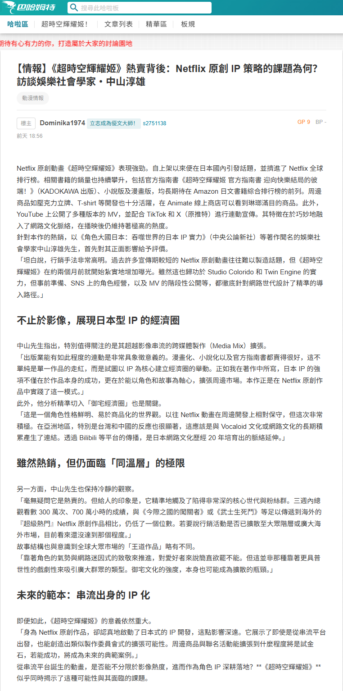
这篇分析很符合我的看法，巴哈也有人翻译 整体是典型的核心向动画，热度大致介于鸡狗哭、蒜水滚之间inting1楼主Lv.15
【热度豚】超辉夜姬日推单周热度为22年...
【梦回蒜友冲锋时】超辉夜小说爆上日亚书....
【热度豚】超辉夜姬20馆1周票房将达3...
我在隔壁发的三贴分别聚焦于社交热度、商品销售和小规模票房，应该是符合这部的商业走向的，可以参看乖
滅 oneLv.10
前排
MiaMiraLv.2
前排前排，竟然开单楼了
茶话部🔥Lv.14
刚想来看看票房没想到就刷到了单开楼👀
莫谈戚焉Lv.8
吐舌终于来了
纽卡希勒Lv.13
但感觉后续可能要等好久了，现在开始企划，等到30年能再看到彩叶吗阴险
纽卡希勒Lv.13
宣布延长上映吗？
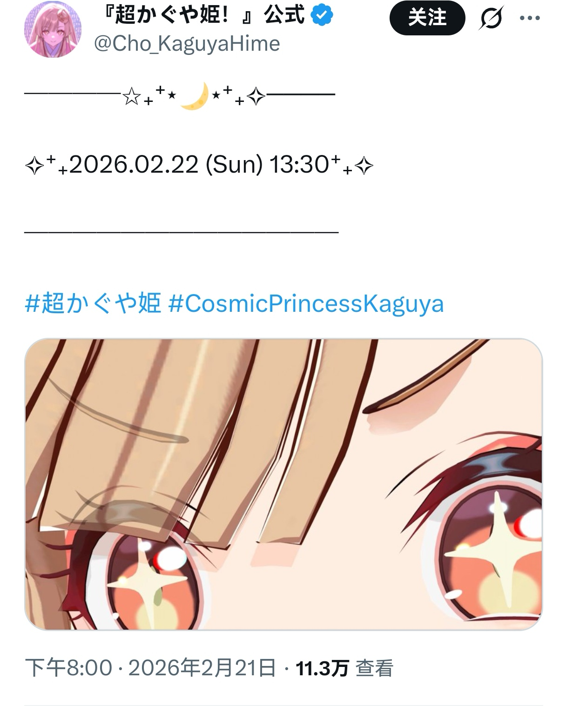
莫谈戚焉：阴险怎么都不follow一下2026-02-21 20:38
纽卡希勒：现在fo了2026-02-21 20:46
5A1yGxu：难道说2026-02-22 05:40
莫谈戚焉Lv.8
25w关注了太开心
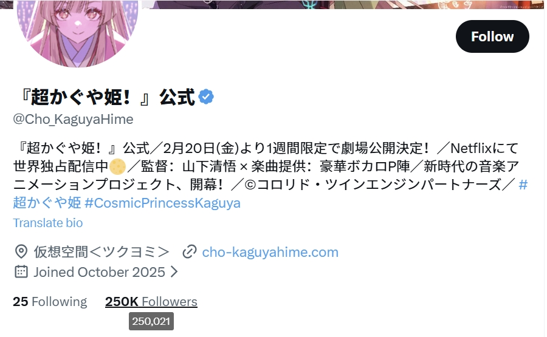
莫谈戚焉Lv.8
营销这方面完全被官方拿捏了（褒义
沧海巫山ºLv.3
居然有单楼了
纽卡希勒Lv.13
如果加馆了能稍微测一下纯实力，我感觉纯实力（上来就大规模上映）还是没有30亿的。主要是感觉i7这类冲特典能力还是更强些阴险
纽卡希勒：先等扩大上映，希望打我脸阴险2026-02-21 23:43
莫谈戚焉Lv.8
羊狼总动员0301Lv.15
*14366(+*188) *14734(1.00) ****** 58.2% ****** 超かぐや姫！
今天没有漏记现象了，消化率100的时候和昨天差不多，之后又涨了两三千，说明昨天确实统计有漏
我就说单日动员3w是该有的阴险
莫谈戚焉：消化率是什么啊2026-02-21 21:26
纽卡希勒：每天10000坐席，消耗了8000坐席就是80消化率2026-02-21 21:37
莫谈戚焉Lv.8
第二天97%上座率
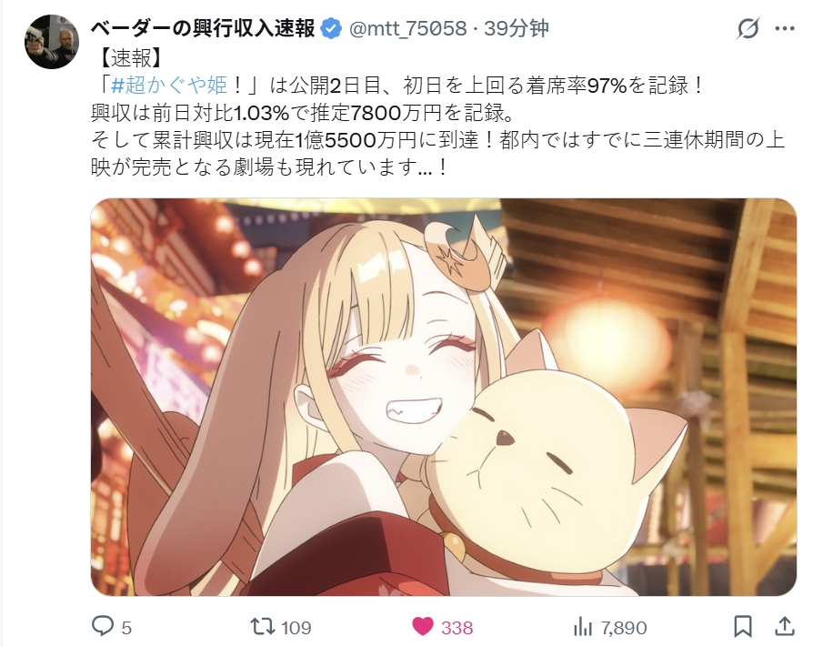
京电小助手：边边角角不好的位置也坐满了人啊2026-02-21 21:26
沧海巫山º：感觉挺红的，不知道最终能有多少2026-02-21 21:27
龍HCLLv.14
本来我看推特粉丝都快涨不动了，今天这波神操作，又有新的增长了！
Wang_doraLv.5
歌卖的怎么样
恭喜爱音成为B萌萌王Lv.15
好好好，辉夜姬居然开楼了
羊狼总动员0301Lv.15
数了下周六的座位一共有3w8，周日有3w6，周一估计是3w5。
周日目前的预约大概有3w4，明天动员估计有3w5，周六的动员按3w7算吧
周五的坐席应该是3w3左右。动员估计3w2
周一动员按3w3算。
四天的动员推移是3w2 3w7 3w5 3w3
票价按1800算就是5700 6600 6300 6000 四天合计2.5亿
羊狼总动员0301：上面的数字都是往低的说的，价格更是估的很低。4天初动3亿也是有可能的。2026-02-21 23:02
羊狼总动员0301：哦不对，有个馆的特殊屏看漏了……每天还要多10002026-02-21 23:18
carsitΩLv.11
居然开楼了真棒
羊狼总动员0301Lv.15
另外周二工作日的票现在也在哄抢中，所有院线的官网都挤爆了
看了几家能进去的也一样订满了。工作日上座或许都能有90%以上
羊狼总动员0301Lv.15
羊狼总动员0301Lv.15
看来真能一周5亿了
纽卡希勒Lv.13
满座就是好，直接按座位算票房滑稽
本质数字ºLv.13
太红了
憶研Lv.12
繼續爆吐舌
5A1yGxuLv.9
这片是真的提现不出来流媒体优势，大规模上院线才是对的。
5A1yGxuLv.9
流媒体对这类题材非常不友好，太小众了
莫谈戚焉：确实动画党应该很少网飞会员哈哈（不过动画党就很爱去电影院吗2026-02-22 07:02
兔宝宝990327：如果题材小众大规模上院线就肯定能产生更好效果吗…作品整体制作逻辑像是考虑到发布完整片源内容有利于先线上传播并找到目标受众的2026-02-22 09:00
5A1yGxu：动画是商法重灾区，催眠麦克风纯靠商法拿了25亿2026-02-22 09:05
5A1yGxu：但就播放量来看，是忽略不记得水平，3周300万人次，而坂本第一集首周就870万人次2026-02-22 17:34
5A1yGxu：不是，网飞有人次统计的，人次统计实际上更利于电影，最高记录是猎魔的5亿人次，电视剧最高的是鱿鱼2亿多人次。2026-02-22 18:07
AdamXL07：因为这部偏核心向而且受众有很多人实际上是看vtb直播比动画多的，其实流媒体反而更利于快速传播，赚得更快但是院线上限很难有参照对象2026-02-22 22:47
回忆の梦Lv.7
哇哦，居然单独开楼了
纽卡希勒Lv.13
感谢祭啊原来是阴险
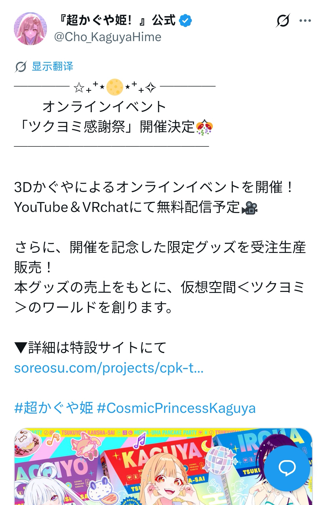
inting1楼主Lv.15
莫谈戚焉Lv.8
看了下那些商品好贵呀（是不是有点割韭菜了小乖
不过最后可以免费参加VRChat活动真好！！
莫谈戚焉：如果出个TV动画化或者续作众筹就好了（做梦中2026-02-22 13:48
5A1yGxu：多割点弥补一下赚不到的院线钱挺好的，而且真割韭菜，那堆乙女向作品爆米更多2026-02-22 17:35
莫谈戚焉Lv.8
八点起床🌞Lv.5
莫谈戚焉Lv.8
莫谈戚焉Lv.8
莫谈戚焉Lv.8
【悲报】圣地超市松饼粉已切
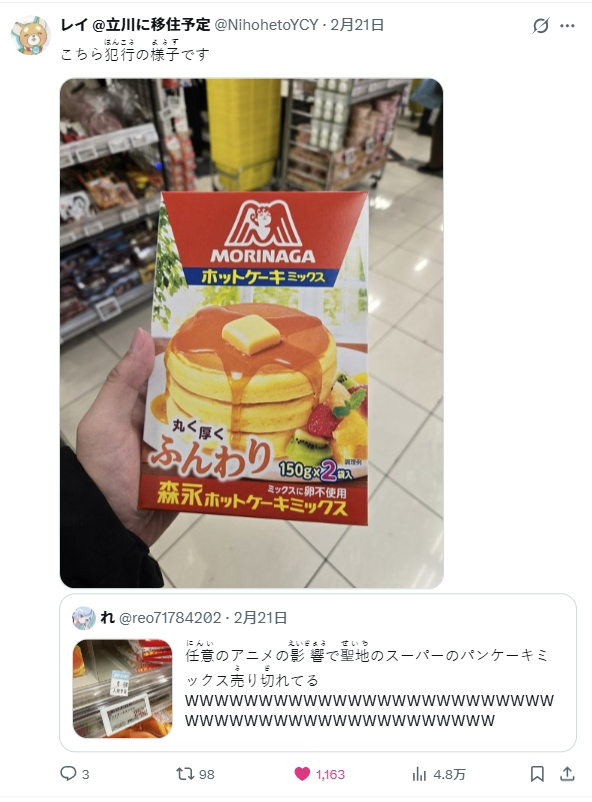
羊狼总动员0301Lv.15
inting1楼主：没说截止日，还有机会 后面看两个风向：能否继续加馆，能否发新特典阴险2026-02-23 11:20
莫谈戚焉：加的不多啊阴险2026-02-23 14:23
莫谈戚焉：我看下面评论说因为周五《哆啦A梦》和《转生史莱姆》的电影要上映了，所以也排不上2026-02-23 14:31
用户007🌀：接下来就是学校春休档期，每年的兵家必争之地。各家电影院日程早就排的满满当当的了，辉夜反而才是来者，能拿到春休档期还加馆，一方面是前期全满座的底气，另一方面肯定有哪部作品的时间段被献祭了。首周可能是小圆回天延期空出来的，2.27后有人猜测是高达票房翻测车了空出来的。阴险2026-02-23 15:21
雪之下雪乃：只加8馆有点蚊子腿了阴险，虽然相对原本的19馆增加了42%，但后续可能没有加馆了，除非能逆跌2026-02-25 15:19
龍HCLLv.14
莫名看着很爽.
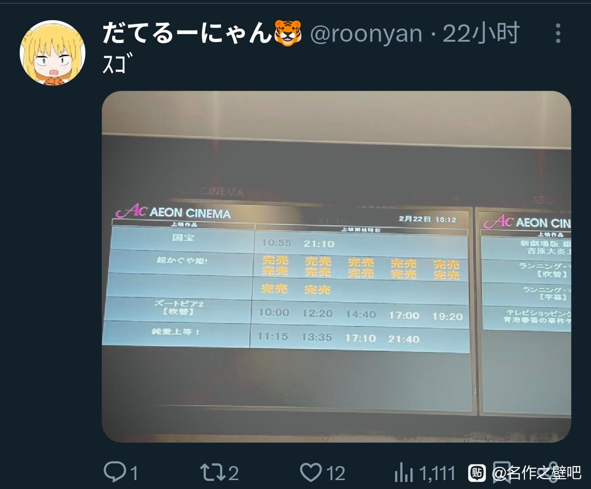
夜星划空Lv.13
莫谈戚焉Lv.8
沧海巫山º：还是上电影院观感更好更吸粉2026-02-23 20:46
茶话部🔥Lv.14
莫谈戚焉：稳定的收入真棒2026-02-23 23:45
沧海巫山º：也太稳定了吧2026-02-24 08:20
莫谈戚焉：满席是这样的太开心2026-02-24 10:39
茶话部🔥Lv.14
5A1yGxuLv.9
又看了下op red，对比一下感觉辉夜姬可惜就是歌卖的不够多，而且不够好听。
5A1yGxu：就歌来说雀斑公主没得黑2026-02-24 06:28
龍HCLLv.14
不知道真假！
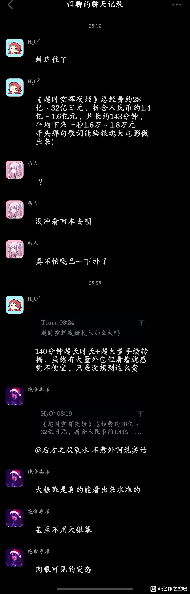
高浮雕580：不是内部人员，哪里来的经费来源2026-02-24 09:51
ftghyw：这是和高畑的电影搞混了吧阴险2026-02-24 12:10
纽卡希勒：咋可能这么贵，闹呢2026-02-24 12:35
DFB_Trumpet：信QQ群的这辈子有了2026-02-24 13:08
山水花苑：成本目前就是没有公示，看到一律作假阴险2026-02-24 14:17
羊狼总动员0301Lv.15
4477(+***4) **5086(.239) ****** 20.3% **4585 超かぐや姫
工作日上座接近9成
某不科学的FF君Lv.1
今天座席是不是比昨天多？
龍HCLLv.14
用户007🌀：这是Cinema City这一家的票房排行。这家影院只有两馆，都在东京立川，也就是本作故事发生地，之所以能超过木村拓哉出演的教场也是因为这里方便圣地巡礼吧。但整体上和这些春休大物还是没法比，教场都8.4亿票房了。2026-02-24 13:15
龍HCL：这样啊！我就说不可能第一啊汗2026-02-24 13:36
羊狼总动员0301Lv.15
啥玩意啊7Lv.1
感觉百馆上映的话，能保30亿冲50亿呀，莉可莉丝以后最大热度原创ip可能真不是吹的。
茶话部🔥Lv.14
茶话部🔥Lv.14
羊狼总动员0301Lv.15
4日間で興行収入が約2億9122万円、観客動員数が約14万8000人を記録したことが分かった。
茶话部🔥Lv.14
八点起床🌞：卡九（x2026-02-24 22:41
龍HCLLv.14
没有到3亿，可惜了！
莫谈戚焉Lv.8
体感电影院上映之后更多人去看了，刷推看到各种各样的人发观后感
超时空辉夜姬你真的火了太开心欢呼
所以说1000日元的netflix真的不如2000日元的电影票划算吧2333
沧海巫山º：刷推看到好多是第一次在电影院看完超时空辉夜姬觉得很不错的2026-02-25 08:14
overvellLv.13
ツインエンジン『超かぐや姫!』画期的成功収める
わずか全国19館での公開ながら、金〜日３日間の成績は
動員11万３３７１人、興収２億２３４８万５４００円。
３００館規模の作品が上位を占めるなか、
２月20〜22日の週末動員ランキング（興行通信社調べ）では５位にランクイン。
23日（月・祝）を含む４日間では
動員14万８０６７人、興収２億９１２２万２７００円
という驚異的な数字を叩き出した。
龍HCLLv.14
推特粉丝感觉又涨不动了！官方再来几个好消息吧！把馆数增加到五十馆就好了！
莫谈戚焉：对啊，快点推特营业一下啊（）2026-02-25 22:59
某不科学的FF君Lv.1
感觉平日也蛮稳定的
龍HCLLv.14
这水平如何啊？本来以为能七天五亿呢！
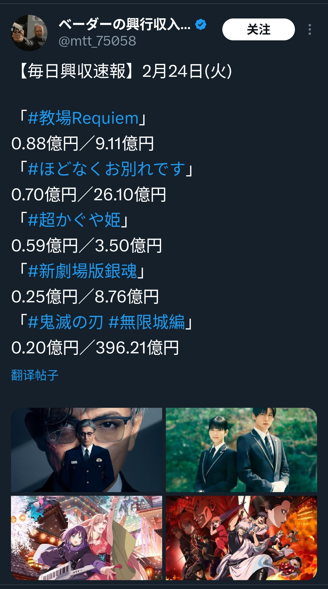
某不科学的FF君Lv.1
周五能破5亿吧
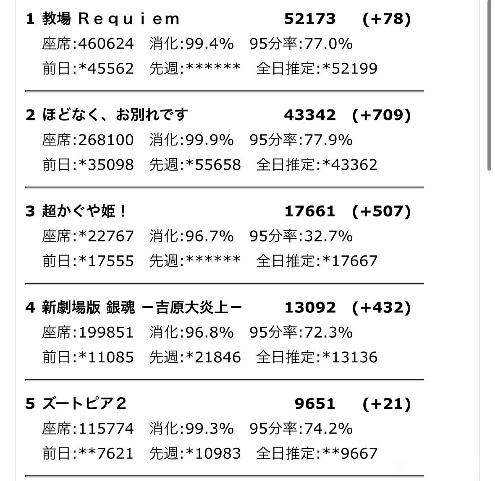
莫谈戚焉Lv.8
龍HCLLv.14
该继续加馆了……
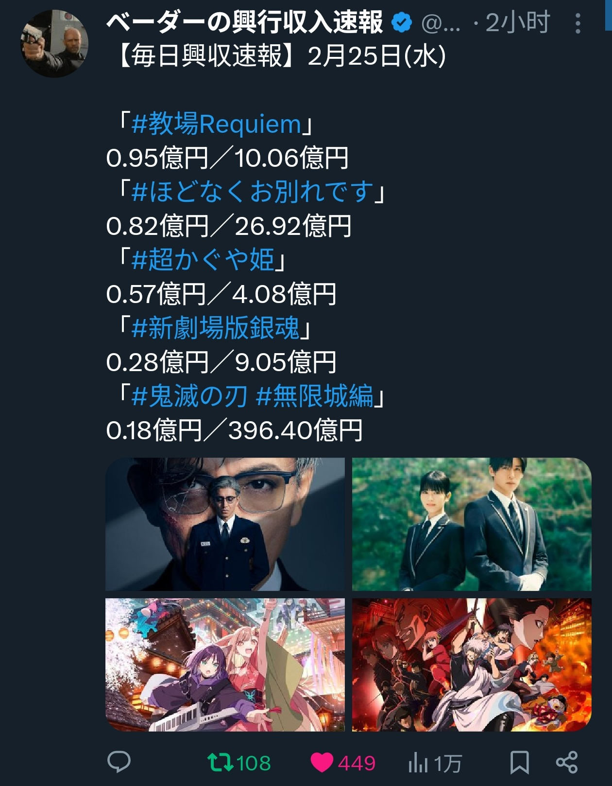
inting1楼主Lv.15
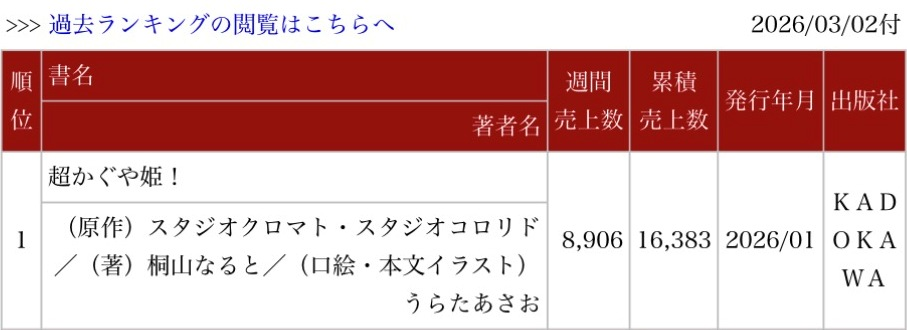
小说终于补货了 目前日亚还在前5，后劲没问题aptx星璇：上周飞榜我还以为是卖不动了合着原来是一直没补货吗，还是剧场公开效应2026-02-26 12:15
inting1楼主Lv.15
厉害笑吧：阴险感觉后劲还是有点略显不足，能不能再爆点大的炒作一下2026-02-26 16:25
5A1yGxu：流媒体炒作不了，题材先天瘸腿2026-02-26 18:29
仙翳Lv.12
现在众筹到百分之几百了
龍HCLLv.14
仙翳：还真是好数字啊2026-02-26 13:05
某不科学的FF君Lv.1
龍HCLLv.14
一直减少是上座率降低很多了？
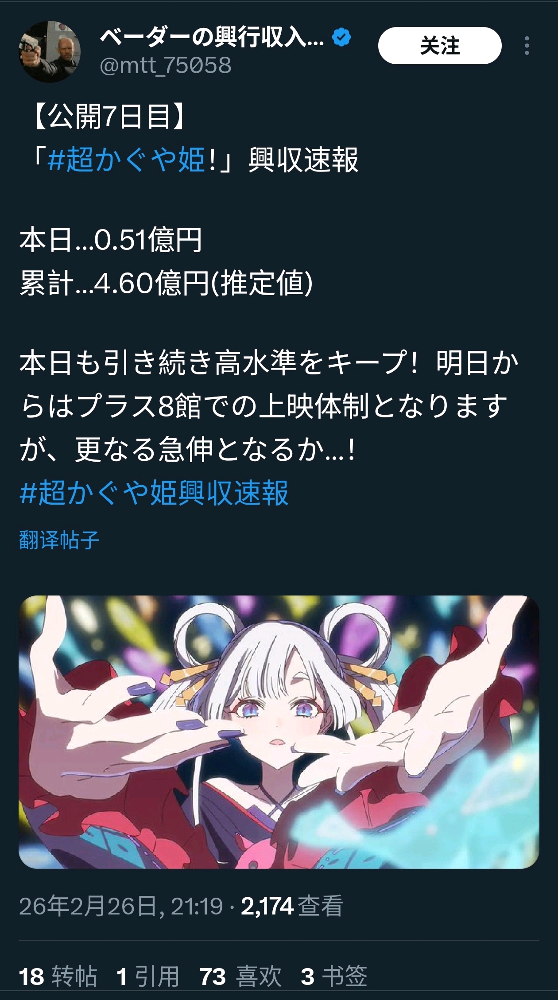
莫谈戚焉：放映时间延长+平日也正常吧2026-02-27 00:39
莫谈戚焉Lv.8
5A1yGxuLv.9
另一部原创之光银河特急再扩75馆了，辉夜姬不搞个百馆以上真没啥诚意
overvellLv.13
周末扩馆后上座率就下来了，这样看就算正常上映也到不了30亿吧阴险
酸涩的橙子Lv.9
这个三十多馆坐席已经相当于以前一些一百多馆新片的坐席了，虽然不能这么比，不过不少300馆新片坐席还不到辉夜姬的3倍
酸涩的橙子：看了下不到30馆，是馆均场次多。2026-02-27 11:48
某不科学的FF君Lv.1
感觉这受众冲特典效果应该还可以
茶话部🔥Lv.14
茶话部🔥Lv.14
inting1楼主：推子管子官号比官推多了20万粉 官推工商太多，吸引力比较低2026-02-27 19:17
龍HCLLv.14
某不科学的FF君Lv.1
龍HCLLv.14
这馆白加了？甚至比昨天低emmm...
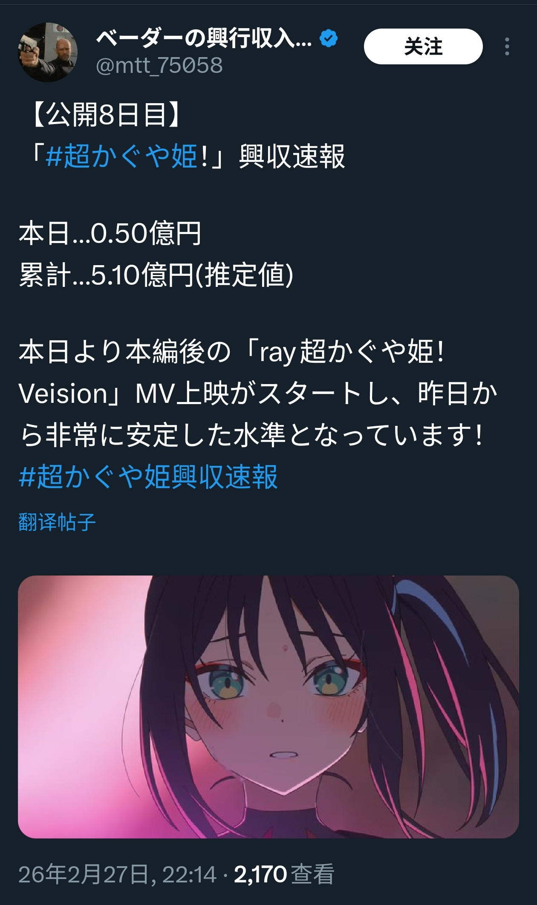
用户007🌀：次周+春休大物冲击+无特典，今天哆啦A梦和史莱姆刚上哦2026-02-27 23:25
5A1yGxu：想快速收米那就上imax和4dx这种高净值荧幕2026-02-28 21:54
某不科学的FF君Lv.1
小说现在严重缺货什么时候能补上
龍HCLLv.14
莫谈戚焉Lv.8
29w粉 再磨磨上30太开心
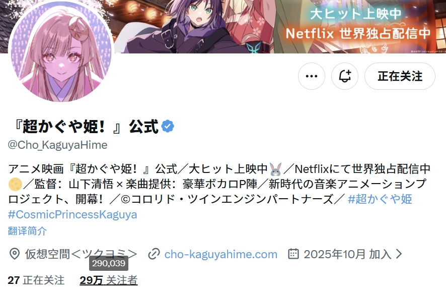
杜滋琪Lv.11
上座率拉到70%，还是很恐怖的
瓦上片霜Lv.7
主要是没特典吧
某不科学的FF君Lv.1
龍HCLLv.14
先导后积🥵Lv.10
官推294300粉丝达成
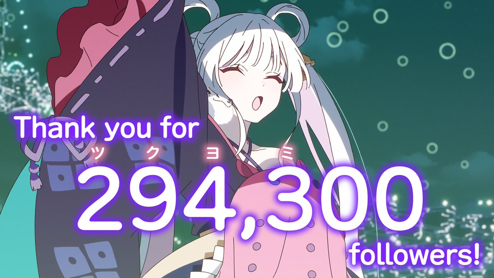
龍HCLLv.14
不知道官方看不看重剧场上映？
赶紧宣布扩馆和特典重刷还能挽救下票房颓势！
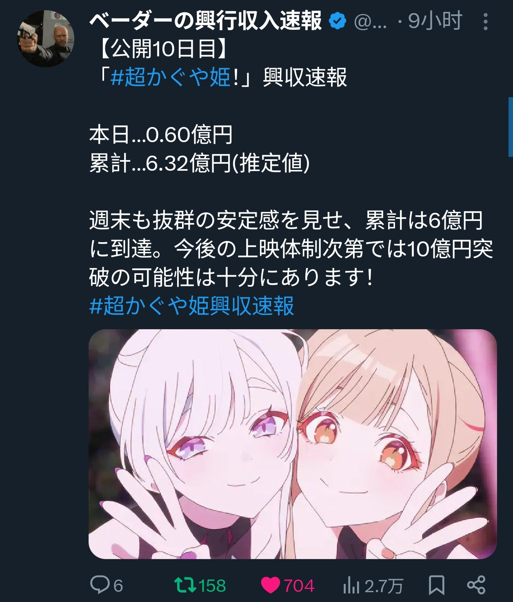
with🧳Lv.12
龍HCLLv.14
莫谈戚焉Lv.8
推特粉丝增速又猛了起来酷不过为啥。。
回忆の梦Lv.7
贴吧用户_GN8XJ8N：看来还是后劲不足，没有特典看来是这样的小乖2026-03-02 23:42
龍HCLLv.14
羊狼总动员0301Lv.15
龍HCLLv.14
这么看的话，感觉辉夜姬还挺强的！
我们需要特典之力啊泪
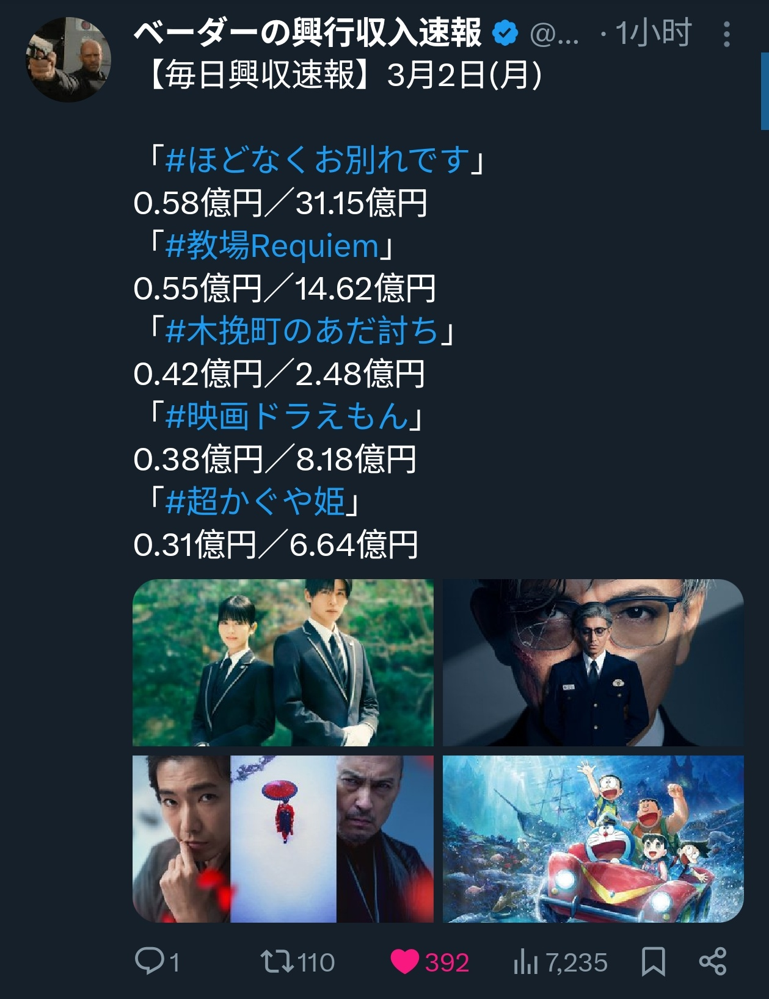
隐杏珠隐大Lv.5
呵呵
龍HCLLv.14
平日都很一般啊！
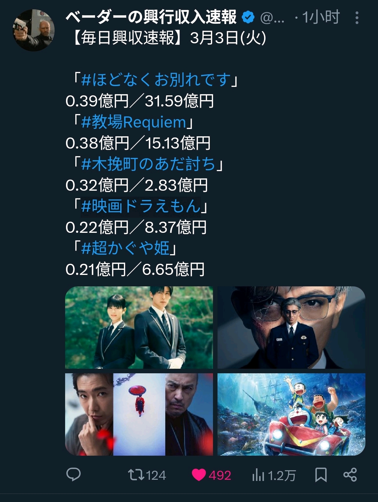
莫谈戚焉Lv.8
羊狼总动员0301Lv.15
电影效应还可以
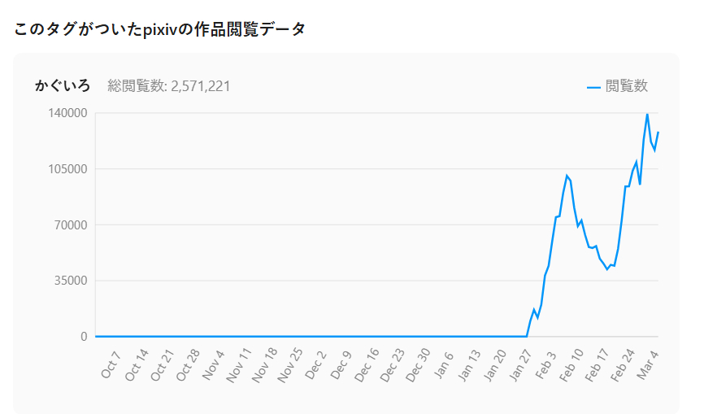
龍HCLLv.14
今天要是能公布全国上映加特典追加就死而无憾了！
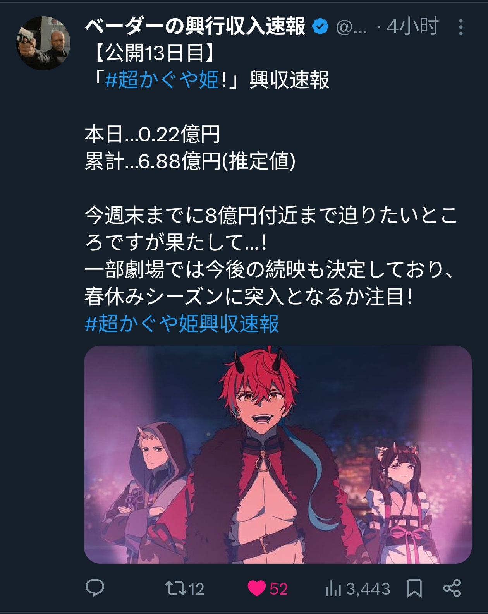
inting1楼主Lv.15
小说又一发补货炮
日亚实时也登顶，加印多少后劲就有多少
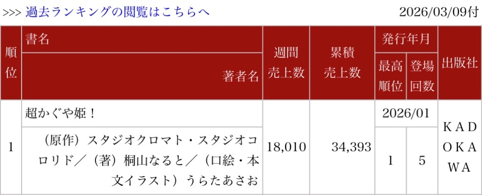
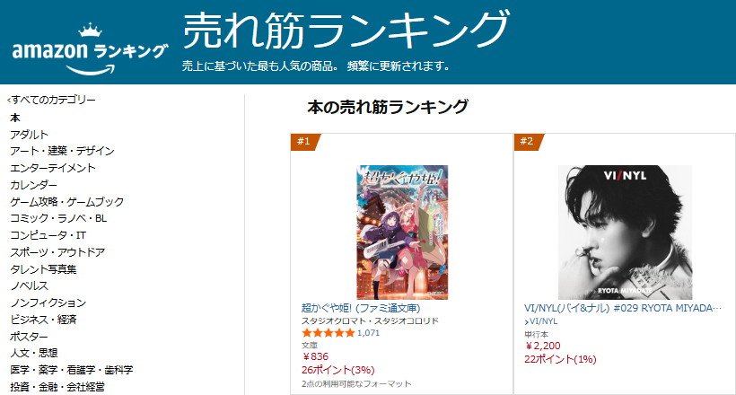
回忆の梦Lv.7
羊狼总动员0301Lv.15
从2月份的二创规模来说，单月有这个水平的似乎只有蒜水滚了。当然指的百合cp方面
回忆の梦Lv.7
龍HCLLv.14
这下真的死而无憾了！！！
inting1楼主Lv.15
追加120多馆，新特典也有了，开冲！
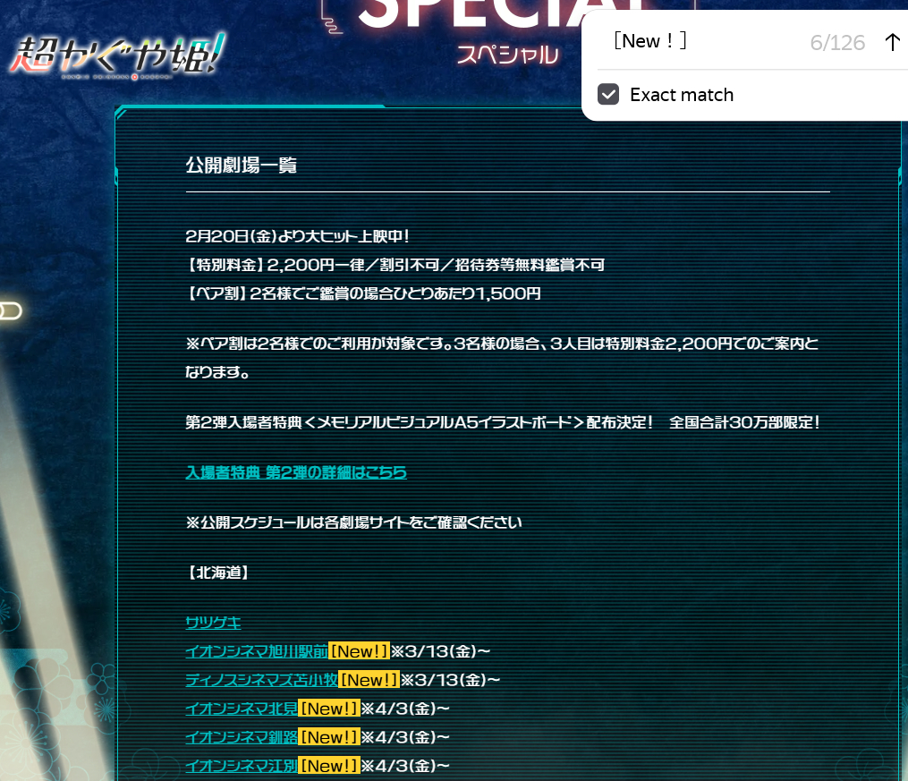
厉害笑吧：加油冲啊阴险2026-03-05 20:23
羊狼总动员0301Lv.15
虽然截止上周动员才30万，不过加馆后如果完全平均摊下来的话每馆也就2000不到，热门馆周五就没了。希望不要均摊阴险
inting1楼主：其实更重要的是有没有周替特典，这种片是刚需这个的阴险2026-03-05 20:44
羊狼总动员0301：其实现在还是吸粉阶段，还好吧阴险晚点加都行2026-03-05 20:47
5A1yGxu：从这周上座率来看出圈感觉没啥戏了，能收割粉丝的钱已经不错了2026-03-05 20:59
aptx星璇：应该不会均摊，首映的时候就是新宿池袋的特典是分得最多的撑到了晚上，其他馆的虽然开的场次还没新宿的多但是大多数上午就没特典了2026-03-05 21:00
奈雪ののLv.9
又加馆了，一群大主播开始直播同时观看，不知道能带上多少人进电影院
5A1yGxuLv.9
不上个imax或者4dx吗，高净值荧幕才能最快收粉丝的米
龍HCLLv.14
4月3日才上这种，感觉肯定得有新特典吧！
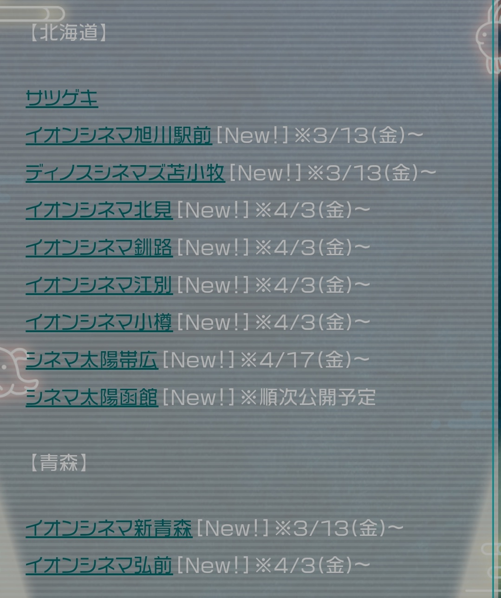
aptx星璇：其实有特地说4月3号才上映的剧场也会有这个第二弹特典，说明起码到4.3应该是不会换特典了(不然会变成不同剧场发的特典还不一样)2026-03-05 23:17
龍HCL：那会加印，还是分出去？2026-03-05 23:18
aptx星璇：应该每个剧场分到的特典数量是确定的提前分好的，前面先上映的剧场发完了不影响后上映剧场的量，所以如果有粉丝前面没抢到特典甚至可以去后上映的剧场再抢一次(大概)2026-03-05 23:51
GZ丶冬Lv.2
辉夜姬版权在谁手里，网飞吗，网飞不是只抓流媒体不喜欢电影院吗，北美大爆的灭魔女团也只限定上映一周
5A1yGxu：辉夜姬是双引擎出资，不是网飞，ip的收入归双引擎，只有播放权卖给了网飞。2026-03-05 23:09
奈雪のの：网飞出钱，由双引擎及旗下动画工作室全权制作动画2026-03-05 23:40
奈雪のの：有钱肯定赚啊，该开的会员都开了。2026-03-05 23:41
GZ丶冬：Ip是在网飞手里吗2026-03-05 23:59
5A1yGxu：像网飞真正出资的ip，製作或者企划里会写着netflix（比如同时netflix动画电影的漂流家园）但辉夜姬只写着双引擎。2026-03-06 00:07
奈雪のの：网飞出钱让动画公司做，相当于买断流媒体还预付款。但动画这种东西，结果全看有没有摸鱼，为了让动画公司拼命，只会签一堆附加条款但版权还是动画公司的。2026-03-06 00:13
奈雪のの：特殊在于没有网飞就没钱做，所以谁也不知道网飞话语权多大。2026-03-06 00:14
5A1yGxuLv.9
双引擎很早就把以后的原创播放权全打包卖给了网飞，而双引擎的最近几部里漂流家园是唯一一个netflix投资+参与制作的（下图），制作里会写，而我的鬼女孩和辉夜姬都是双引擎最早打包卖给网飞播放权的其中两部，网飞没有参与投资和制作。有网飞的播放费保底还是很重要的。
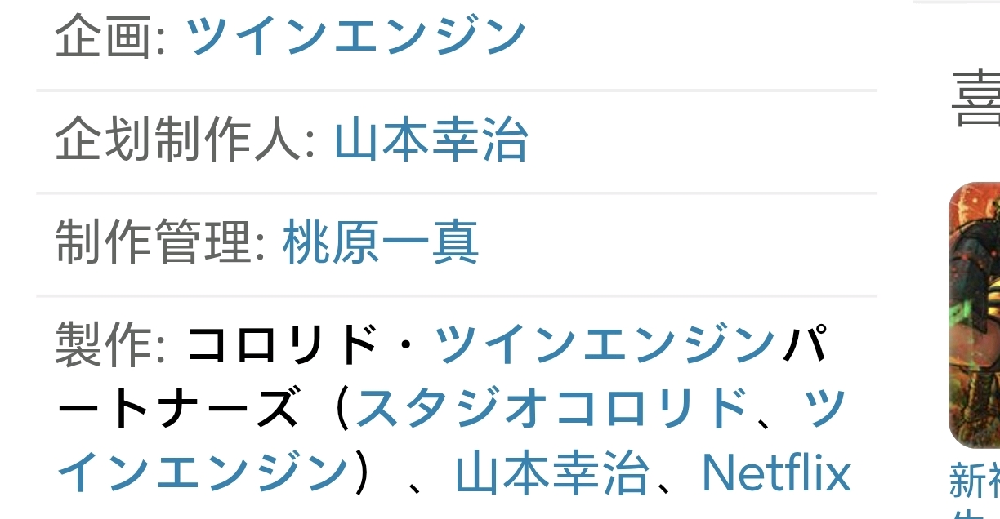
永远De正版丶Lv.15
可以测测令和的河豚跟腐女哪个能打了阴险
5A1yGxu：这几年从票房来看腐女碾压，催麦+忍者乱太郎+鬼太郎这几部接近或者超过30+的都是腐女在c。2026-03-06 01:50
永远De正版丶：近年来百合向的还没真正出过大热电影/ip剧场版吧？上面说的滚水蒜只有滚出了总集篇剧场版2026-03-06 09:38
5A1yGxu：没有，能挑战30的目前来看只有魔圆2026-03-06 13:15
纽卡希勒：只能等小圆证明了2026-03-08 22:42
憶研Lv.12
好想看到DVD/Blu-ray發售決定阴险
龍HCLLv.14
用户007🌀：这周至下周五跌幅应该会比较大，特典消息放出大部分人会选择等特典2026-03-06 13:02
龍HCL：好像还有不少新片上映，确实会跌的很惨了泪2026-03-06 15:26
龍HCLLv.14
InclisLv.1
虽然只是刻板印象，但本片瞄准的动画宅群体应该并不算是很爱主动往电影院跑的类型吧，会不会其实电影院还挺喜欢辉夜姬这种片，可以招来一部分没有特殊原因就不会主动踏进电影院的客源
目前其余上映中且有一定热度的宅向动画电影只有史莱姆，银魂和哈萨维，目标客户群体与主打音乐、偶像、管人、百合要素的辉夜姬都有一定差异，而且哈萨维还已经不太行了，而原本会比较接近的回天延期到了八月，或许这也是辉夜姬能拿下这么多剧场的原因之一？
龍HCLLv.14
龍HCLLv.14
没有金额吹不动啊！
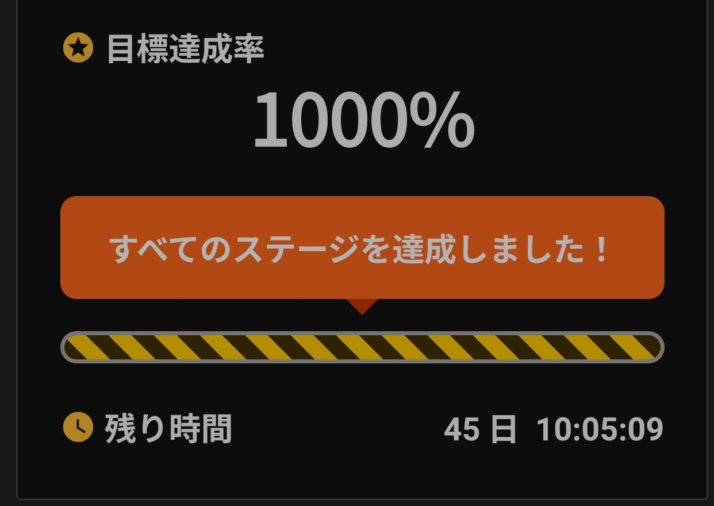
厉害笑吧：喷居然已经1000%了吗2026-03-08 13:19
一如既往的路过：不公布金额确实2026-03-08 14:08
aptx星璇Lv.8
虽然一些地方上的剧场后劲不足了但是圣地立川还是很坚挺，不愧是有圣地和监督特调音响加成，无论怎么上新片都是动员第一
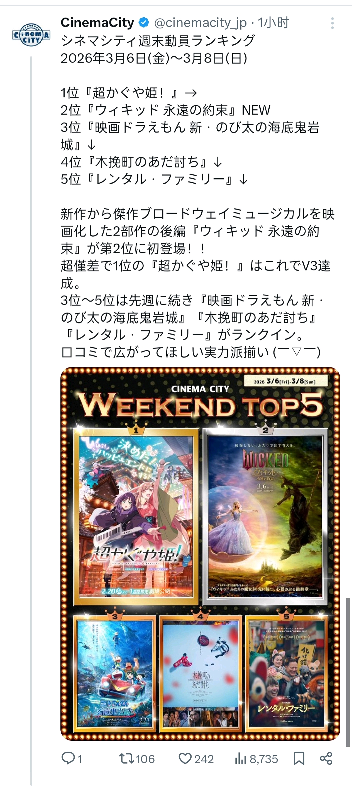
龍HCLLv.14
周一到周四看来要票房扑街了！
羊狼总动员0301Lv.15
周五的坐席大概有10万+，是第一周的4倍左右。
龍HCLLv.14
羊狼总动员0301Lv.15
『超かぐや姫！』は17日間で動員40万183人＆興収7億9371万5500円
龍HCLLv.14
inting1楼主Lv.15
羊狼总动员0301：这讨论度大概有半蒜滚水的水平了阴险2026-03-11 11:09
5A1yGxu：现在only展和线下生态搞起来后，最大的comicket至少不能完全代表二次元热度的风向标了，comicket可以靠大量买摊强撑手游ip的所谓脸面。2026-03-11 19:38
inting1楼主Lv.15
越来越验证我去年的判断了
线下活动（包括观影）对路人能跟风打卡，对死忠能提纯固粉，肯定是以后IP开发必须重视的环节阴险 从大体量的鬼灭到小体量的恋人不行，上院线都可以显著提高死忠活跃度和公众曝光度
5A1yGxu：反正收割粉丝，高净值荧幕要多发力（imax、4dx），配置要拉满，影院就该有影院的效果，不能再拿tv质量上院线糊弄观众。2026-03-11 19:41
如幽女怨怼之物7n：合理的三哈，所以我现在完全不懂网飞要干死院线的动机，明明可以双赢的。我还挺想看网飞发行的大制作电影上院线的三哈。2026-03-12 09:22
一如既往的路过：之前不是说网飞收购华纳的事已经告吹了吗，也有人说网飞本来就是打算把业务扩展到院线(？)。现在网飞估计会改变策略了2026-03-12 12:13
5A1yGxu：网飞现在和imax就是双赢状态啊，纳尼亚也上了imax。2026-03-12 22:12
如幽女怨怼之物7n：纳尼亚还没出吧？只上IMAX吗？还是包括IMAX的所有院线？2026-03-12 22:23
羊狼总动员0301Lv.15
特典看来周五就保不住了，周五上座明显高于上周
用户007🌀：不至于，30万份特典总量在这里，现在放了三周的总动员人次才40万。2026-03-11 11:03
羊狼总动员0301：我指的我这边的阴险只能盼能多分点特典份额了2026-03-11 11:06
龍HCLLv.14
感觉至少到众筹结束下映吧？搞不懂电影周期！
厉害笑吧Lv.1
不知道这个ip现在赚回本了没有？
看现在增速放缓了，扩大上映后，能不能磨到票房20亿？
龍HCLLv.14
AdamXL07Lv.10
5A1yGxu：基本没了吧，原创非ip动画电影基本全是爆死货，特别是这几年那堆唐氏人设的。这个蛋糕一直没人吃得到。2026-03-12 23:25
5A1yGxu：不过按照这图的评判标准，其实很多宫崎骏的都属于改编作。红猪和风之谷都是改编。2026-03-12 23:31
AdamXL07：滑稽含金量怎么还在提高……2026-03-12 23:48
5A1yGxu：原创动画电影爆款太少一直是业界通病，甚至比原创tv还要稀缺的多。2026-03-13 00:18
燐冉：绝对不止这点，哆啦A梦系列时不时出新原创电影，票房稳定在20亿以上，这个表里没有2026-03-13 08:50
仙翳：哆啦A梦是ip作2026-03-13 09:20
燐冉：表上写的是原创电影，况且这表里按照你的意思，好几部作品都不应该上2026-03-13 09:26
benyingfang：红猪也就罢了，风之谷基本按漫画搞的，肯定不能算原创了2026-03-13 19:03
龍HCLLv.14
inting1楼主Lv.15
羊狼总动员0301Lv.15
不过周五的坐席和上座都比周六高不少的样子
羊狼总动员0301Lv.15
今天有1.3-1.5亿的样子
龍HCL：好像没有了，排第一的才1.2……2026-03-13 21:39
用户007🌀：辉夜的票价是偏高的。2026-03-13 21:46
一如既往的路过：1.31，应该是第一了2026-03-13 23:28
InclisLv.1
茶话部🔥Lv.14
用户007🌀Lv.9
雪之下雪乃：虽然开了100多馆，但坐席确实不太多，今天还是最多的一天的了后面只会更少2026-03-14 00:17
用户007🌀：排片本来就是夹缝中捡剩饭捡出来的，能捡到近10亿票房真的惊到我了，只能说感谢这段时间褒姒的大片吧滑稽2026-03-14 00:20
羊狼总动员0301：辉夜姬的博客取得率比黄金神威低，实际应该是14万坐席左右2026-03-14 01:49
羊狼总动员0301Lv.15
但是周六的坐席和上座都会掉不少，可能不到周五一半
龍HCLLv.14
一如既往的路过：也就是说之前的1.31是推测值，实际缩水了11%吗2026-03-14 07:22
龍HCL：不知道啊！之前好像没看到变过……2026-03-14 07:29
用户007🌀Lv.9
只能说这个博主也不懂怎么算辉夜的系数，情侣票比例太迷了
某不科学的FF君Lv.1
感觉15万问题不大，20万的话要看官方后续怎么操作了
InclisLv.1
这个发行收入博主用的网站统计辉夜姬坐席似乎没有那么准，还有情侣票，估计不太好算
现在公开的剧场里有一部分要等到四月才开始上映，即便打算再发新特典大概也得等到四月中旬往后，摸到15亿的可能性应该是不低的，再往上就要看还有没有进一步的商法了
井ChishaLv.1
没在设备最好的东宝连锁影院上映，感觉还是有点可惜
龍HCLLv.14
十亿会出通稿吧？明天能不能看到？
杜滋琪Lv.11
现在只开了86馆，
龍HCLLv.14
羊狼总动员0301Lv.15
龍HCL：羡慕嫉妒恨！顺便问一下人多吗？2026-03-14 17:36
羊狼总动员0301：7 8成上座率吧，前排有些空位2026-03-14 17:42
岛村卯月：羡慕，不知道之后能不能上香港2026-03-15 17:54
龍HCLLv.14
用户007🌀：应该要等兴行通信社公布权威数据2026-03-14 23:36
羊狼总动员0301Lv.15
把这周末的2.5-3亿当做初动，4倍推移就10-12亿，算上之前的部分就差不多20亿了
用户007🌀：不好说，这片现在看来还是特典驱动型的，如果没有新的特典可能熄火的速度比想象的快。不过这波上映反倒是吸引了一批被拉去凑双人票的路人入坑，转头去入网飞会员了阴险2026-03-15 01:01
羊狼总动员0301：后面应该会有新特典的吧……2026-03-15 01:23
羊狼总动员0301Lv.15
8723(+*631) *23850(.313) 315.0% 66.4% *16475 超かぐや姫！
羊狼总动员0301Lv.15
这周推移是周五＞＞周六＞＞周日 emmm
某不科学的FF君：辉夜就是偏粉丝向了，扩圈不咋样，要靠特典。难绷的是感觉她4月3号前不会发……？虽然我希望他要是能3月底发个第三弹就好了……星期五我看有很多男大群体？昨天我去渋谷humax看，那里男女55开，之前去新宿看男女比9比12026-03-15 11:43
龍HCL：确实吧！看这两天的推特粉丝增量也一般般！还是希望看到奇迹啊泪2026-03-15 12:06
InclisLv.1
在宅向动画的基础上，流媒体发行进一步放大了缺点的感觉吧
网飞的数据说明面向路人的拉新效果其实还不错，但在线上可以随便看的前提下，如果没有特别的意愿，影院去个一次拿拿特典其实就够了，想多看直接回家开电脑就行
周五的上座率也是早场出奇的高，基本说明大部分人都是奔着特典来的，想刺激票房只能靠新特典了
EeLv.1
呵呵忘记在哪里看到说辉夜姬电影票价偏高了，感觉现在隔壁大环境不太好的样子，物价都上升，只能靠粉丝爆米了，要是经济上行的时代票房就更繁荣了。
羊狼总动员0301Lv.15
声破天的收听数大概50万水平，马马虎虎吧阴险
InclisLv.1
一如既往的路过：有点搞2026-03-15 19:28
龍HCLLv.14
厉害笑吧Lv.1
比较官方的数据大概什么时候会出来？这个双人票价真不太好算阴险
用户007🌀Lv.9
香槟可能开早了，按通信社说法可能没过10e
厉害笑吧：磨一磨总能磨上10e的……吧阴险2026-03-16 15:33
一如既往的路过：看了看还真没提，那些搞预测的看来集体扑街了，我记得最保守的的应该也过10亿了2026-03-16 16:10
龍HCL：这也太惨了，16.8亿现在也遥不可及了QAQ2026-03-16 16:41
一如既往的路过：不过emmm，感觉还是先看看吧2026-03-16 17:54
回忆の梦：惊哭2026-03-16 18:02
羊狼总动员0301Lv.15
某不科学的FF君Lv.1
话说按照以往惯例今天官推应该发周末动员庆祝推文的，不会是興収差点到10亿，等着这几天一起发个贺文吧
龍HCL：总感觉应该到了十亿啊！唉，难受了泪2026-03-16 21:42
龍HCLLv.14
一如既往的路过：几个测数据的都没受到影响，该发还是发。我感觉可以先让子弹飞一会，毕竟要是他们感觉不对的话，早就会向下修正系数了2026-03-17 00:12
瓦上片霜Lv.7
上周末实际就是差一点十亿的话有必要纠结吗？推上那几个号都是自己估的票价，实际均价没人知道，等周二白天出来不就知道了，差一点的那再多一天不就达到了。
一如既往的路过Lv.6
InclisLv.1
龍HCL：没有通稿emmm...2026-03-17 08:03
某不科学的FF君：草，那为什么通信社不说一下破10了。有没有10亿贺图啊！乖2026-03-17 08:06
茶话部🔥：你好，能求一下这个表格的来源吗2026-03-17 19:42
Inclis：oricon吧票房贴嫖的，源头是日本的付费杂志2026-03-17 20:43
龍HCLLv.14
那个推测的博主，今天的给的周一数据都比周日的准确数据少0.12！他会根据准确数据调整吗？按理说他今天可以等准确数据出来再发吧！
用户007🌀Lv.9
阴险误会解除，无事发生
回忆の梦Lv.7
阴险难道真要等16.8亿
仙翳Lv.12
官方逗你玩滑稽
憶研Lv.12
羊狼总动员0301Lv.15
3月13日（金）～15日（日）の動員数144,281人、興行収入287,064,500円
羊狼总动员0301Lv.15
均价2000
小王者二韦：不便宜啊2026-03-17 17:41
龍HCLLv.14
官方发起的三连休活动如何啊？没有新特典吸引力大吗？
5A1yGxuLv.9
东宝今年也差不多该涨涨票价了，3年没涨了。
龍HCLLv.14
羊狼总动员0301Lv.15
春休这周开始，虽然从受众面来看不知道有多大效果
羊狼总动员0301Lv.15
かぐいろ这个月的小说投稿看来有机会超过单月历史第一的千泷
墨西哥墨汁▫：能加上ヤチいろ合并算吗阴险2026-03-21 11:32
龍HCL已删除Lv.14
这一层已被删除或隐藏，点击展开查看保存的内容
⚠️ 2026-09-27 起已看不到（被删除或隐藏），以下是之前保存的内容
看了看周五的坐席预定，感觉官方这个活动好像没啥特别大的效果？
龍HCLLv.14
InclisLv.1
莫谈戚焉Lv.8
龍HCLLv.14
龍HCLLv.14
春休新片一多，连数据都没得看了泪
龍HCLLv.14
龍HCLLv.14
龍HCLLv.14
龍HCLLv.14
用户007🌀：东宝自己就是发行商，肯定优先安排自己发行的片子还有自己的引进片2026-03-21 23:59
一如既往的路过：x上也有人吐槽东宝影院不上的事2026-03-22 07:48
龍HCLLv.14
用户007🌀Lv.9
龍HCLLv.14
用户007🌀Lv.9
现在加特典有点麻烦，那批 4.3 上的剧场还没开始发第二弹特典，除非直接宣布第二第三弹可以自选。按之前提前一周宣的话也会导致当周萎靡，柯南就要上映的当口可不兴再搞自砍坐席的事情了
龍HCL：感觉30w特典量太多了，好多人都好几份了！能不能把第一弹特典复刻下！现在在上映的影院从周五开始，没发完的的话可以一二弹自选！估计第三弹要到4月17日了吧emmm...2026-03-23 10:44
龍HCLLv.14
龍HCLLv.14
龍HCLLv.14
龍HCLLv.14
用户007🌀Lv.9
本周动员数=675813-562542=11.3万人次
第二弹特典发放至今动员数=11.3+14.4=25.7万人次
特典发放进度=25.7/30=85.6%
除了4.3才上映的，其他影院的第二弹特典这周就能派完，刚好生命周期结束。
双引擎的估算挺精准的，资源利用最大化了。
但随着上周开始大热新片上映，很快柯南也要上映，排片会逐渐降低，部分影院会迭代下映，16.8亿的目标是很难实现了。
龍HCL：是不是太悲观？感觉得至少上映到四月底吧？最后再来一波特典应该还是有希望的吧？2026-03-24 10:03
用户007🌀：这批新增的永旺院线已经明说放到这个月底就差不多了，后续有新片上映。辉夜在绝对主场立川Cinema City连续数周的第一位上周也保不住了。3.2亿不是那么好苟的，基本等于一部普通保本动画电影全周期的票房了（参考谷口的巴黎星光，初上映两个周末下来才1.4亿）。发第三波特典可能有一搏的机会，但目前看来官方兴致一般，官推宣发上也淡下来了，进入固粉周期。2026-03-24 10:42
龍HCL：还以为四月三日要火力全开了，原来反而是末期吗泪2026-03-24 11:00
DFB_Trumpet：特典是13号开始的吧2026-03-24 18:34
用户007🌀：是的，13-15日动员数是144281人次，16-22日一周的动员数可以用当周累计数减去上周累计数，675813-562542=113271人次，加起来就是25.7万人次，默认全部都发了特典，那就是发了25.7万张。2026-03-24 20:56
龍HCLLv.14
用户007🌀：彻底疯狂吐舌直接把第二弹停了统一发第三弹是没想到的2026-03-24 17:39
某不科学的FF君：神了，后面要周替特典了吐舌这下每周都要去一次电影院了哈哈2026-03-24 18:00
仙翳Lv.12
商法玩的6啊，不过新图跟不上了么
InclisLv.1
看样子是要上周替特典，效果应该不至于太差，但有点怀疑后面上映影院的数量是不是会减少
而且第二弹特典停发，估计有些在地方的观众要不乐意
Inclis：不过这特典到2号就终止，3号后才有排片的影院要怎么发，怕是要出运营事故2026-03-24 18:40
DFB_Trumpet：早都说了照样发啊2026-03-24 19:47
一如既往的路过Lv.6
龍HCLLv.14
龍HCLLv.14
龍HCLLv.14
看官方的动作，正如我之前的预测要在四月火力全开了！能火到啥程度，就看这一个月了！不过感觉对路人的吸引力可能真不行，一方面票价太高，想试看的不如去网飞划算，另一方面题材上可能真有上限，指望真百合火出宅圈可能真的是梦想！
北柠莫寒：票价确实高啊，一个人去看的话2200日元，我看其它电影也就1500，网飞那更是几百2026-03-27 08:58
星祈月：百合这个标签真的这么重要吗，我一个不看百合的人都爱看这个2026-03-27 08:58
用户007🌀Lv.9
新特典的带动效应还是明显的，同时段比昨天+2000，但受限于坐席数逐渐走低，还是低于三连休的上周五（第二弹特典发放次周），这三天如果能到1亿多一点，16.8亿就比较简单了。
龍HCL：这次可能周六比周五强吧！好多人都还在上班的吧！2026-03-27 13:08
用户007🌀：开始发第二弹的那个周五是最猛的2026-03-27 15:00
龍HCLLv.14
用户007🌀：有可能想苟到20亿2026-03-27 19:07
某不科学的FF君：正好第五弹结束就进入黄金周，我估计黄金周官方会想冲一波2026-03-27 19:54
流光_p：我端午去日本，希望立川那个电影院能放映到6月2026-03-27 22:17
用户007🌀Lv.9
票房追踪网站的数据，比上周五（三连休）低1500左右，比第二弹特典发放当周五（3.13）低36000左右。
用户007🌀：坐席数也比3.13砍半还多一点，在特典发放常态化的当下很难复刻当时压抑一周集中爆发的盛况了，不过辉夜现在的平日成绩比无特典那段时间好多了，甚至每天推上都能看见初见的观众，基本都是先去电影院看完后开通网飞会员二刷三刷，这对票房也有一定影响，后续如果真搞周替特典可能需要更有吸引力的东西来吸引这部分人再掏钱进电影院看一部已经上线2个多月、上映1个多月的电影。2026-03-27 20:48
龍HCL：慢慢苟吧！新片太多了，严重挤压坐席数……2026-03-28 00:02
AdamXL07Lv.10
这次辉夜姬的成功不知会不会让未来业界出现更多小型电影企划尝试流媒体先行限定上映，攒足口碑再去院线大规模发行博一把，辉夜姬还是没做太绝…其实网飞线上流媒体发行早该暂时下线一下了滑稽
酸涩的橙子：这有什么尝试不尝试，你一部动画都能搬总集篇上院线，何况原创电影，有能力的话还可以多要排片。2026-03-27 22:19
AdamXL07：不过这种模式有个问题就是海外院线上映会被流媒体影响很多，辉夜姬按理来说已经很爆火了港台韩却迟迟没有上映计划，感觉完全是引进方不敢去赌一把喷2026-03-27 22:22
AdamXL07：它现在这种模式太怪了…以后应该改下阴险2026-03-28 14:14
用户007🌀：辉夜也是合作协议商定的三部作品的最后一部了，如果不续签协议的话，双引擎可以考虑上别的限制少一些的平台，当然估计大概率还是会继续合作，好不容易出金了岂有不继续氪的道理。2026-03-28 17:57
AdamXL07：希望未来有类似企划可以是线上 线下不要同时上了，对票房肯定有大影响的2026-03-30 01:55
龍HCLLv.14
用户007🌀Lv.9
三连休结束后首周末，有竞争力的新片比较少（只有一部鬼新娘），票房大盘总体疲软，上周六被新片空降挤出前十的辉夜又获得了呼吸权，总体和上周六基本持平。如果周替特典能够落实，票房走势会拖出一个比较漂亮的长尾，最后的落点会远一些。
井Chisha：今天鬼灭发最终特典的样子?下午可能跌出前十，不过已经很不错了。2026-03-28 13:03
用户007🌀：是的，鬼灭冲400亿的关键期了，不过辉夜的走势一向比较独立，排名就是露个脸看看实时，意义不算太大2026-03-28 13:14
龍HCL：只希望这三天能有个1亿票房就满足了！虽然卖座的不多，但是席位也算是被挤了！不过这个上座率的话，也许更多的座位也没有很好的成绩？看看4月3号再次扩馆后能不能有个提升吧！不知道三号的特典怎么安排，要是再发新的，四月三日的馆就有三种特典了？难道说是三种任选？2026-03-28 15:57
用户007🌀：今天的走势挺不错，比昨天和上周六都要好，大家对特典哄抢心态缓下来后，没有再出现像3.13那周末动员一天比一天低的情况了，更有利于院线调整票房走势模型2026-03-28 16:12
用户007🌀：结果是一直领先到了现在阴险辉夜太猛了2026-03-28 18:41
龍HCLLv.14
某不科学的FF君Lv.1
这周能15亿吧，就是明天会走低
龍HCLLv.14
清风自蓝天起Lv.11
16.8冲冲冲泪
龍HCLLv.14
某不科学的FF君Lv.1
这周末两天都比周五高，挺稳定
用户007🌀Lv.9
又摸到前十了…真顽强啊
龍HCLLv.14
我都不准备看到了，没想到这么给力？不过消化率100了，感觉最后还是得掉！
龍HCLLv.14
龍HCLLv.14
龍HCLLv.14
用户007🌀Lv.9
上周应该是最后一次前十了，今天跌幅比较大。上周增长大概1.8亿，离16.8亿还差1.6亿，按现在的走势大概下下周能达到
龍HCL：希望扩馆能救一下！2026-03-30 14:01
用户007🌀：下午救回来了，19时比上周同期略好，势能还是OK的2026-03-30 18:12
龍HCL：嗯，我刚也去看了，感觉可能进入平稳期了！不过感觉受众还是扩大不了啊，推特粉丝数也蜗牛般爬了！年轻人可能看的不太多啊，都是二三十岁的在看吧！2026-03-30 18:26
莫谈戚焉：二三十岁不年轻了what2026-03-30 22:00
龍HCL：都被孩子叫大叔了23332026-03-30 22:34
龍HCLLv.14
龍HCLLv.14
龍HCLLv.14
龍HCLLv.14
用户007🌀Lv.9
符合预期，下下周到16.8e。
龍HCL：这周少跌点还能勉强到！泪2026-03-31 09:06
龍HCLLv.14
龍HCLLv.14
InclisLv.1
唱见曲绘还剩三张，估计是下周送，但后面总得出点新图吧，逮着旧图反复用多少有点缺乏诚意了
还有这周开始加的mc语音，不知道会不会在次周之后公开
墨西哥墨汁▫Lv.8
用户007🌀：后续的还没出吧，只出到4.3的2026-03-31 18:05
某不科学的FF君：把网址后缀改了就全部看到了2026-03-31 18:10
龍HCL：这是什么草台班子汗2026-03-31 18:19
用户007🌀：喷还真是，顶级草台2026-03-31 20:42
某不科学的FF君Lv.1
4月3上映的馆，特典是2.3.4弹特典一起发突然兴奋
龍HCL：我也看到了！就是不知道是能一次性拿几个？2026-03-31 23:09
用户007🌀：按永旺富士宫的措辞，应该是一次性全发阴险2026-03-31 23:48
用户007🌀Lv.9
龍HCLLv.14
话说买双人票，去一个人能直接拿两份特典吗？
回忆の梦Lv.7
月人不过愚人节啊
龍HCLLv.14
用户007🌀Lv.9
用户007🌀：另外我在那段涨幅很慢的时间留意到一个买了168000套餐的老哥购买前后的百分比对比，猜测100%大概在1000w左右2026-04-01 19:49
一如既往的路过：果然还是搞不懂为什么要隐藏金额2026-04-01 20:59
用户007🌀Lv.9
龍HCL：会赢的！！！2026-04-01 20:48
用户007🌀：今天官方周边号发了庆祝1500%的消息，应该是有一群氪佬在冲1680%，现在又增长了10%，快的话估计这周就达成了。2026-04-01 22:48
龍HCL：那个周边号是官方的？2026-04-01 22:54
用户007🌀：看错了，不好意思，那个是粉丝号狂汗2026-04-01 23:25
InclisLv.1
由Bushiroad分析部门Anime Date Insight Lab发布的26年冬季动画数据分析报告，辉夜姬不仅在一般知名度（谷歌搜索量）上名列前茅，在粉丝热量（推特投稿量）上更是小胜咒术回战，成为26年冬季动画中的第一，且不同于热度通常集中于首播时期的一般动画电影，辉夜姬的热度显然更加持久
该报告将辉夜姬评价为本季度唯一的黑马
龍HCL：我也看了这个，就是不知道这个报道影响力如何？2026-04-02 00:14
用户007🌀：路边一条的程度阴险毕竟mggm是能对着主播女孩番剧喊出四月霸权的人。这数据可视化一眼用Excel做的，连折线图的默认色卡都不改。2026-04-02 20:12
龍HCLLv.14
inting1楼主Lv.15
Lostleast：村井村这本，似乎不能算百合同人……2026-04-02 11:45
宝多茜：村井村这本是酒寄兄妹本2026-04-02 13:52
inting1楼主Lv.15
月◎剑苏：因为大部分都投推上了吧2026-04-02 11:39
酸涩的橙子：一样，其它ip也是投推上多，p站早不是主流2026-04-02 11:57
168bpm：现在还有多少人画图会去投蓝p这种满是AI图的地方？2026-04-02 11:58
一如既往的路过：辉夜那套相当露了，但一方面是体型不够，另一方面是制作组比较收敛。两人互换一下衣服估计能起飞2026-04-02 12:05
仙翳：因为已经和那年情况不同了，p站的大量用户都离开了2026-04-02 12:44
aptx星璇：现在发图的都到推上去发了（虽然当年也是不过当年在推上发完之后还是会去蓝p发个まとめ），但要发小说的话基本蓝p还是第一去处（而且据我观察很多cp小说只打了作品tag和角色tag没打cp tag所以不少没统计上的）2026-04-02 14:57
5A1yGxu：现在最大的漫展comicket和pixiv都不能代表太多风向了，二游可以在comicket和pixiv上买摊位和买稿注上去，现在是only展生态发展的更好，各玩各的。2026-04-02 21:20
清风自蓝天起：超辉的r18率挺低的，也挺好的。2026-04-03 11:48
龍HCLLv.14
话说刷推没看到说特典发完的，看来真的备足货了？
龍HCLLv.14
龍HCLLv.14
龍HCLLv.14
白衣毛哥：蒸2026-04-02 23:50
龍HCLLv.14
清风自蓝天起：等待16.82026-04-03 11:45
龍HCLLv.14
龍HCLLv.14
我昵称被删了😷Lv.11
20亿可以吗？
龍HCL：应该问题不大吧！上映到六月份肯定能苟到！2026-04-03 10:03
shdhvisjsb：16.8肯定又会有新活2026-04-03 21:29
龍HCLLv.14
龍HCLLv.14
王者之韦Lv.12
没想到这波特典效应这么强
龍HCLLv.14
龍HCLLv.14
Kizumi-：6662026-04-03 23:57
仙翳：太好了，马上就16.8亿了2026-04-04 00:52
龍HCLLv.14
明天的坐席好像不如今天？周六又被挤掉了吗？泪
井Chisha：我记得周末座席是不准的，仔细观察就发现每部片都减少，结果就是到了晚上过了100%才加回来。2026-04-03 23:53
龍HCLLv.14
这周好像又要变成周五最强了？
龍HCLLv.14
龍HCLLv.14
龍HCLLv.14
大佬也不发票房了！今天比昨天低了一千多，太难了！
龍HCLLv.14
好像新馆特典都不多啊！好几家都没了，今天的票房指数比昨天低了2000了泪！感觉是最后的绝唱了！
DFB_TrumpetLv.9
这周肯定是最后的高光了，下周柯南直接泥头车冲爆，cinemacity已经挤到只剩两场了
inting1楼主Lv.15
龍HCL：好像是宣布上影院的推特以外，最火的一条了！粉丝都加了3000了吧！太有才了！2026-04-06 12:11
龍HCLLv.14
龍HCLLv.14
龍HCLLv.14
龍HCLLv.14
用户007🌀Lv.9
用户007🌀Lv.9
龍HCLLv.14
希望官方明天宣布再加几馆！柯南太吓人了，这坐席周五还能剩多少？
龍HCLLv.14
龍HCLLv.14
用户007🌀Lv.9
【个人渣翻】超时空辉夜姬电影院广播（八千代&彩叶）-哔哩哔哩】 BV18ZDeBuEYZ
下周欢迎音声的开头部分，让我们恭喜彩叶完成向连自己名字都讲不出来的胚胎的伟大进化，彻底沦为八千代大人的玩具欢呼🍾🍾🍾
某不科学的FF君Lv.1
被柯南排片吓哭，周末还能有多少座席
忱頭▫Lv.15
下午抽时间看完，真不戳，有续篇就好了
忱頭▫Lv.15
龍HCLLv.14
用户007🌀Lv.9
关于那部和辉夜姬同人设同声优的电影作品，因为个人bmg和gmg都爱看，就去了解了下（想着壁吧都是数据厨没有洁癖人士吧 就发这了阴险），只能说蹭热度的意图不要太明显（单指动画改编，小说没有问题），一看制委名单是松竹映画——富士电视台联盟就释然了，果不其然松竹基操叒发力了。如果你不知道，松竹刚刚靠一波神鬼莫测的营销操作把一部开了280多馆当地好评如潮的作品干到票房只有3e不到。
至于剧情本身，能说道的其实挺少，整体架构和迪迦穿越时空的微笑一集很像，但结局又类似只有我不在的街道。总体来看不像是能卖座的样子，所以出品方才会选择碰瓷营销吧。
用户007🌀：另一家出资方富士台（Pony Canyon名义）也是极品，感兴趣的可以查查这两年的新闻阴险2026-04-08 00:20
仙翳：本来从来没听说过，好奇去查了一下，发现原作人设根本没有泪痣，然后电影人设直接无中生有，简直是一点碧莲都不要了2026-04-08 17:32
用户007🌀：人设我相信是巧合，或者是hechima想搞类似堀口脸的个人品牌，毕竟PV1是2月11日发布的，那时候辉夜才刚上线20天，连院线都没上，热度还没彻底爆发，而且整套人设和预告是不可能在这么短时间内做出来的。但cv这块我合理怀疑有鬼阴险，PV1没有人声，隔了差不多两个月才上PV2，离正式上映还有6个月。2026-04-08 19:29
龍HCLLv.14
周五的坐席很绝望啊！赶紧拓展海外市场吧……
龍HCLLv.14
为啥感觉新特典也没用了！看了几个馆周五的购票情况，形式险峻啊！要凉了泪
龍HCLLv.14
某不科学的FF君：这周开学了2026-04-09 08:39
aptx星璇：能每天都保持前十已经很不错了，春休结束了看看大盘基本的先周比都降到50%以下了2026-04-09 12:41
用户007🌀Lv.9
春休结束了，工作日大盘肯定低迷的。为什么说柯南剧场版在商业上对院线那么重要，就是因为它在春休后能给所有影院一个收入稳定的饭票，解决掉员工吃饭问题，所以虽然它的上映挤掉了不少排片，但没有它，很多小众电影也会因为不赚钱而被院线拒绝。
5A1yGxu：ip电影永远是最重要的，好莱坞生命力这么强也是靠ip系列保住了全球下限。2026-04-10 04:40
龍HCLLv.14
龍HCLLv.14
用户007🌀Lv.9
龍HCL：刚想再水下！看到你发了！说是合砍，我们今天贡献的不到百分之一！！！2026-04-10 20:08
用户007🌀Lv.9
话说今天其实还有个商品上市，就是松竹系影院（MOVIX、Piccadily等）开卖了带官绘贴纸的爆米花盒子；
合理怀疑这玩意预定是上周开卖的，毕竟上周欢迎音声刚好在吃爆米花，这周又撞上柯南，实在不是什么好日子阴险。
但今天的销量还是超出了松竹院线的预期，以至宣布了4.24起追加贩售的决定，并表示现在正在追加生产中。
龍HCL：爆米花好像还是得另买的样子23332026-04-11 08:45
用户007🌀：里面有爆米花，可选咸口和焦糖味2026-04-11 09:03
龍HCL：看推看错了吗？好像说可以单买盒子的？2026-04-11 09:04
用户007🌀：我看官方宣传的“中身のポップコーンは、塩味 or キャラメル味 からお選びいただけます。 ポップコーンは耐油袋に入っており、外箱は記念にお持ち帰りいただけます。”2026-04-11 09:09
龍HCLLv.14
龍HCLLv.14
用户007🌀Lv.9
阴险运营已经在轻哼了，万一到时候真给它蹭到前三了，怕是直接卡古鸭吼了
龍HCL：前三有点难，前五感觉还是有点希望！2026-04-11 10:30
用户007🌀Lv.9
太恐怖了，用上上周（3月28日）同期46%的排片打出了91.6%的动员人数比，上座率高达61.9%喷在京都的战地记者说虽然排片减少了很多，但部分场次直接满员了……
龍HCL：说明特典还是很有吸引力的！官方这波精准拿捏了！2026-04-11 18:30
用户007🌀：给各家院线释放的信号很明显了：大头给柯南固然爆赚，但剩下的小头分多一点给辉夜，也一定不亏，起码比那些排片水平相当但票房没眼看的片子好2026-04-11 18:31
龍HCLLv.14
用户007🌀：防弹少年团2026-04-11 18:43
龍HCLLv.14
煞觉：电影院能知道什么消息呢？2026-04-11 18:47
用户007🌀：应该是和这家电影院的联动活动，和海外关系不大2026-04-11 18:51
京电小助手Lv.11
海外会上吗？
日本本土有没有出Dolby Cinema杜比影院格式？
一如既往的路过：忘了谁说的，欧美(也许是英国？忘了)搞过小规模上映，不过没人说后续如何，应该是反响一般2026-04-11 21:14
aptx星璇：没有杜比，只有几个影院有强化音效厅(立川的极音和チネチッタ的live zound那种)2026-04-11 22:47
兄弟干的不错：没有吧，海外上映肯定优先选东亚2026-04-12 16:31
DFB_TrumpetLv.9
煞觉Lv.6
话说这周的欢迎广播推上都说很不错，但就是没说有什么内容
龍HCLLv.14
白衣毛哥：蒸2026-04-11 23:34
沙漠天使：没怎么受柯南影响，今天票房甚至逆增长了，现在18.4亿了，牛2026-04-12 00:30
龍HCL：和上周比的话，还是降了的！2026-04-12 06:51
夜星划空Lv.13
龍HCLLv.14
用户007🌀：昨晚发的被吞了喷这博主认为辉夜没上东宝院线是塞翁失马，但我觉得这有点倒因为果了如果一早就上了东宝系影院，光靠东宝的覆盖面、选址和知名度都能让票房再高一个等级2026-04-12 14:46
ftghyw：上东宝院线，东宝大概要在商品化上掺一脚的阴险2026-04-12 15:22
龍HCLLv.14
用户007🌀Lv.9
周日目前依然保持着70%以上的先周比，与昨天基本持平，上座率进一步上升到66%。
我就直说了，一些赔钱片就应该下映了，周末上座率9%都不到的东西还加什么排片汗
龍HCL：看到好几个影院特典都发完了……官方这波备货量一般般啊！2026-04-12 17:26
龍HCLLv.14
龍HCLLv.14
石球Lv.15
票房超过promare了，目前在原创动画电影里应该是仅次于宫、诚、守的作品了真棒
龍HCLLv.14
龍HCLLv.14
用户007🌀Lv.9
这周二三四名争夺有点激烈啊，菜鸡互啄高端局阴险难道说
龍HCL：不关我们事，死守第五名阴险2026-04-13 08:55
用户007🌀：再算算这三天票房金额呢阴险别忘了辉夜的票价是比其他都高的2026-04-13 09:07
龍HCL：那个排名不是按人数排的吗？通信社！2026-04-13 09:18
用户007🌀：对的阴险2026-04-13 12:46
龍HCLLv.14
用户007🌀Lv.9
5位は、公開8週目を迎えた『超かぐや姫！』（ツインエンジン）がその順位をキープした。
没充值就是不把你当人阴险
龍HCL：估计东宝也要的多，没谈拢！2026-04-13 21:27
龍HCLLv.14
用户007🌀：上午上座率很低2026-04-13 22:18
168bpmLv.5
龍HCLLv.14
龍HCLLv.14
龍HCLLv.14
龍HCLLv.14
龍HCLLv.14
龍HCLLv.14
用户007🌀Lv.9
这波闪卡似乎热度不是很高，需要搞点新活了
用户007🌀：众筹 2000 2030 官方都没啥反应，不知道 2040 有没有东西，下一个节点不会是 2943 吧滑稽2026-04-14 21:33
龍HCL：我感觉好像比上一弹更受欢迎！转推 喜欢 查看量好像都高的多！2026-04-14 22:32
龍HCL：问就是没活了！广播剧已经是最后的波纹了！2026-04-14 22:33
煞觉：众筹只剩几天了，会不会等结束后再来波大的？2026-04-15 00:03
用户007🌀Lv.9
龍HCL：坐席该多点了！主办方说的惊喜呢？2026-04-14 22:34
龍HCLLv.14
井ChishaLv.1
看推上对川崎Cinecitta的特殊厅赞不绝口，真想实际体验一次啊。(当然还有圣地立川的极音、池袋Grand cinema sunshine)
用户007🌀Lv.9
阴险影院版的片尾滚动字幕比流媒体版多加了两个表记：
-
配給営業
渡辺大輔
-
配給
Studio Colorido
证实了辉夜这次登陆院线，45个地方接近150家影院都是同一个人谈下来的，堪称彩叶人间体了。
在动画Staff Wiki上查了下，这位渡辺似乎以前就开始从事电影上映的协调工作，2012年上映的《神奇树屋》就有他的名字，他也负责了2021年的《银魂 THE FINAL》的配给营业。但受限于 Staff Wiki 较少收录动画电影除制作组、声优以外的内容，查不到他更多信息了。
用户007🌀：就是不知道他为啥会跳槽到Colorido，这公司已经很久没有正儿八经搞过规模上映了，上一次还是企鹅高速公路……2026-04-14 23:35
龍HCL：除了东宝，还有能争取的影院吗？2026-04-15 17:35
用户007🌀：松竹旗下的MOVIX、皮卡迪利，东映旗下的T-JOY，还有永旺院线都谈下来了，只不过不是全馆上映。就是被东宝卡脖子了阴险。针对只有东宝影院的地方，能想到去找市民文化厅的人绝对是老资历。2026-04-15 18:25
龍HCLLv.14
羊狼总动员0301：周三是优惠日2026-04-15 18:29
用户007🌀：辉夜是特别料金，除了情侣票不适用任何优惠2026-04-15 21:17
羊狼总动员0301：但是周三的影院客流量本身会大一些2026-04-16 11:15
shdhvisjsbLv.1
太夸张了，还在发力啊喷
用户007🌀Lv.9
龍HCL：新活安排下吧！2026-04-16 06:58
龍HCLLv.14
龍HCLLv.14
明天坐席3.5w！还是不敢去电影院网站看坐席预约情况了！越看越感觉要凉泪
用户007🌀Lv.9
明天有东宝发行绫濑遥主演的新片上映，开了 300 多馆，还有一个日摇 live 大电影，柯南的排片都被挤了，哆啦席位只比辉夜多 1w 不到，放一个月以前哪敢想啊阴险
龍HCLLv.14
羊狼总动员0301Lv.15
龍HCL：好像是最高单周？2026-04-16 12:39
用户007🌀：这周差不多是 3 月总销量的一半2026-04-16 13:07
龍HCLLv.14
龍HCLLv.14
用户007🌀Lv.9
双引擎是真的草台，一点教训都没吸取阴险
下周五开始是世界第一的公主殿下的卡纸，下下周五一黄金周是第一弹特典复刻，倒勾好似喵吐舌
用户007🌀：第一弹特典复刻可能就是馆长说的第一波大的，黄金周可能有另一个大的接班开幕音声，过完黄金周就应该结束了，改序号查不到后续特典2026-04-17 08:52
龍HCL：下一弹有没有图？2026-04-17 10:23
龍HCL：怎么改的？我怎么试不出来？还是说把漏洞补了？2026-04-17 12:16
用户007🌀：找到第六周特典的图片链接，把文件名第一个数字 6 改成 7 和 8 就有了2026-04-17 13:02
龍HCLLv.14
一如既往的路过：话说出这种周边是走分成还是一次买断2026-04-17 13:20
龍HCL：希望走分成吧！看有没有大佬懂吧！2026-04-17 13:22
ftghyw：一般是走分成2026-04-18 09:30
用户007🌀Lv.9
用户007🌀Lv.9
这周的开幕音声有刀…
时间线是十年前
辉夜问八千代直播有没有能爆火的方法，八千代回答说多记住一些开心或者值得纪念的事情，这样就能找到最珍贵的事物了。辉夜说自己因为觉得太麻烦，所以什么都记不住。
酷
某不科学的FF君Lv.1
cut这期山下访谈跟之前2.3月早期出的杂志访谈有点不一样，之前说是希望赶紧去做下一部原创，这次虽然也提到了原创，但是说还要做超辉夜相关的项目，『超かぐや姫！』関連のことをまだまだやる予定もありますし、それ以外のオリジナルの企画もやっていきたいなと思っているんですけど……。卧槽这不会是要扩充了吧
龍HCL：扩充吧！喜欢！2026-04-17 17:31
一如既往的路过：yysy，希望他是真心想做，而不是赶鸭子上架。。。2026-04-17 20:00
用户007🌀：夏吉的专访也在暗示有后续作品2026-04-17 20:51
用户007🌀Lv.9
今天收盘是上周五的1.3倍，大盘压力是否缓解看明天了。
龍HCLLv.14
龍HCLLv.14
用户007🌀Lv.9
龍HCL：说不定今天就能20亿！2026-04-18 12:15
用户007🌀：乐观估计下周能超小圆了，配合后续黄金周活动能摸到更高一些2026-04-18 12:24
龍HCL：1.4可能是假的泪2026-04-18 18:45
用户007🌀：1.2 也可以了2026-04-18 19:52
龍HCLLv.14
龍HCLLv.14
龍HCLLv.14
用户007🌀Lv.9
龍HCL：刚想发下！看看今天最高能到多少吧！2026-04-19 10:47
用户007🌀：差不多中午预测博主就该开20e香槟了，山下成为继宫崎骏、高畑勋、细田守、新海诚后，第五个进入20亿票房俱乐部的原创动画电影导演2026-04-19 10:50
龍HCL：期待！这名头挺好的！2026-04-19 10:58
龍HCLLv.14
龍HCL：ok了！这就是最高了！2026-04-19 11:24
龍HCLLv.14
一如既往的路过：整挺好2026-04-19 11:49
沙漠天使Lv.5
有没有大佬关注过网飞现在累计播放量多少了小乖
用户007🌀Lv.9
双引擎老板发了句 夢ならば覚めないで
这句话来自于经典名曲《小さな恋のうた (小小恋歌)》的歌词
不会要做这首歌的翻唱和mv吧，歌词还挺贴的阴险
用户007🌀：ほら/あなたにとって/大事な人ほど/すぐそばにいるの（看吧/对你而言/最重要的人/已经在你身边了） ｜ 二人は歩く 暗い道でも 日日照らす月（两个人同行即使是昏暗的道路也有照亮我们的月光）2026-04-19 12:07
龍HCL：也许联想过头了23332026-04-19 12:11
用户007🌀：阴险总得有点新活吧。这是山本转发20e速报的感言，我觉得或许是一个暗示2026-04-19 12:13
某不科学的FF君Lv.1
龍HCL：来个大的吧！2026-04-19 16:13
迷人大白菜：有这样的先例吗？2026-04-19 22:52
煞觉：鬼灭吧2026-04-19 23:37
龍HCLLv.14
龍HCLLv.14
一如既往的路过Lv.6
一如既往的路过：发完贴又涨了1%2026-04-20 00:11
龍HCLLv.14
用户007🌀Lv.9
龍HCL：今天比上周上座啊！感觉还行！2026-04-20 13:19
用户007🌀Lv.9
另外这周排片也明显回暖了，有人反映附近影院的排片从一天一场增加到了一天三场，在票房跟踪站点上每天坐席比上周多了1.2W，坐席数排名从14升到第8。院线总算舍得把一些赔钱货砍了。
用户007🌀Lv.9
3週連続で5位をキープしている『超かぐや姫！』（ツインエンジン）は、累計で動員102万人、興収20億円を突破し、Netflixで先行配信されているなかでの異例のヒットとなっている。
终于给画面了，还多加了一句“成为在网飞先行播出情况下的异例热门作品。”
龍HCLLv.14
创幻之剑：没说法，日本座位是一周一调整，除了受祝日影响，新片基本都是周五上映，所以老片的增减座位和增减馆同样也是从周五开始。唯一可能就说明一点吧，这片到六月底为止都会保持一定的上映规模2026-04-21 13:10
用户007🌀Lv.9
一如既往的路过：昨天就看x上有人讨论要冲数字，甚至有人发了土豪发言(机翻没错的话)2026-04-20 20:27
某不科学的FF君：真到的话，就接近3亿了。我自己估觉得100%是1000万日元2026-04-20 21:55
龍HCL：我去！这么豪的吗？2026-04-20 22:47
煞觉：2943这数字有什么意义吗2026-04-20 23:32
一如既往的路过：之前官方玩梗：2——ツ，9——ク，4——ヨ，3——ミ；连起来就是“月读”(ツクヨミ)2026-04-20 23:43
用户007🌀：2=two=ツ（tsu），9=ク（ku），4=ヨ（yo），3=ミ（mi），月读的谐音2026-04-20 23:46
用户007🌀Lv.9
还剩120%了。当地时间晚上7点便利店支付就提前停止了，虽然对刷卡支付的影响不大
用户007🌀：还差40%了，估计能抢在便利店支付截止前达成2026-04-21 11:22
龍HCLLv.14
龍HCLLv.14
用户007🌀Lv.9
阴险周五水管工师傅就要和死神小学生上演诸神之战了，不知道打出世界第一公主殿下和三人音声牌的辉夜能否顶住
龍HCL：吓死宝宝了！2026-04-21 14:53
用户007🌀：20亿已经达成所有预期了，就等着破一个20.8亿完美替代小圆空出来的档期了阴险2026-04-21 17:25
用户007🌀Lv.9
2943 了，呵呵官方还能说话么
煞觉Lv.6
会有线下表演？
煞觉Lv.6
众筹达到3000%，官方当初有想到这个结果吗？
一如既往的路过：别逗你140%上限笑了(2026-04-21 17:21
用户007🌀Lv.9
黄金周搞了和三连休一样的同步视听评论活动，抽选赠品是第4-5弾翻唱曲绘卡片5张一组，实在是没活了呵呵还以为有大的
煞觉Lv.6
为什么有人说这公告是2040年的时间线
用户007🌀：B站已经有人转载了，开头彩叶报幕情绪很稳定，而且声线确实很像10年后的。辉夜抢话说要办一场最了解彩叶的人是谁的竞赛，不出意外就是10年后的辉八争风吃醋小情调了2026-04-21 18:26
一如既往的路过Lv.6
众筹一到晚上就加快，我甚至产生了一种会冲到4000%的幻觉阴险
浅水只：不是幻觉，已经冲到3983％了阴险2026-04-22 22:26
一如既往的路过：看到了，已经过了2026-04-22 22:38
龍HCLLv.14
龍HCLLv.14
用户007🌀Lv.9
龍HCLLv.14
龍HCLLv.14
某不科学的FF君：估计4亿多日元2026-04-22 23:06
AdamXL07：应该快比电影本体的制作成本都高了…2026-04-23 00:03
用户007🌀Lv.9
最后2小时soreosu（Animate众筹网站）支付系统卡爆了。到点的时候一度根本打不开，现在绝赞炎上中阴险
用户007🌀：从站点被卡爆且大量不重名用户吐槽最后几小时买不到就能看出，这个100%金额绝对不低2026-04-22 23:23
用户007🌀：这次大量用户搞得像今天才发工资一样挤在最后一刻下单，然后animate草台班子没做好服务器扩容和排队系统，一个众筹能看到日本人民族性笑话和日企IT水平笑话，值了吐舌2026-04-22 23:29
龍HCL：都挤在最后一刻买也挺那啥的！不过说明粉丝确实热情很高啊！2026-04-22 23:35
龍HCLLv.14
用户007🌀Lv.9
阴险其实就是柯南上映当天的水平，甚至更好一点。柯南坐席直接腰斩了也是恐怖。倒是有一两部赔钱货还想垂死挣扎，是嫌自己年报赤字还不够难看吗
龍HCLLv.14
aptx星璇：发售3个月了还能一周出9k的数字都算卖不动的话其他轻小说都可以倒闭了阴险2026-04-23 13:01
白衣毛哥：该买的都买了,我的是不是也该发货了怒2026-04-23 15:07
龍HCL：我会员购买的还没补货呢阴险2026-04-23 15:12
龍HCLLv.14
龍HCLLv.14
龍HCLLv.14
用户007🌀Lv.9
这次开幕音声爆了个大的，把二创全部实锤了阴险
彩叶初次登录月读的时候，八千代本人在场
（以下内容支付 500 福币后解锁）
龍HCL：已支付500钱币！2026-04-24 15:27
用户007🌀：彩叶表面很冷静但实际激动得腿都在抖2026-04-24 15:53
惠春：再支付500福币吐舌2026-04-24 16:06
龍HCL：是十年后吗？2026-04-24 16:33
煞觉：500福币已支付2026-04-24 16:38
浅水只：吐舌2026-04-24 18:17
用户007🌀Lv.9
彩叶（红温）：你这是侵犯我的用户隐私
可怜的小菜叶哟，你好好想想，八千代想侵犯的真的只有你的个人隐私吗阴险（个人想法）
用户007🌀Lv.9
背景是辉夜打断彩叶的话，要举办一个比拼谁最了解彩叶锦标赛，参赛选手当然只有辉八二人
辉夜：彩叶被夸奖的时候会扭扭捏捏的，但真生气的时候会一言不发
用户007🌀：:然后八千代就爆了彩叶初登录的情形，给彩叶整红温了2026-04-24 17:20
用户007🌀Lv.9
第二回合，辉夜：彩叶出门前会花很长时间整理刘海
煞觉：动画里还真有这幕2026-04-24 17:26
用户007🌀：福币不足2026-04-24 17:27
迷人大白菜：充值500，快马加编2026-04-24 19:18
用户007🌀Lv.9
阴险辉夜还补了一句：这可是在虚拟世界见不到的哦
用户007🌀：阴险如果这是2030年时间线，是会对八千代打出真伤的2026-04-24 21:17
aptx星璇：回旋镖罢了阴险伤到了吗，自己当年打的怪不了别人.jpg2026-04-24 22:23
用户007🌀Lv.9
阴险明天上座率很恐怖啊，随便点开一家偏远地区的都有50%以上坐席预约了，更别提立川主场的发声场次已经全满了。下周该把一些赔钱货出清了吧，特别是某位过气网红拍的玩意。
龍HCLLv.14
某不科学的FF君Lv.1
感觉要当万年老五了
龍HCL：守住五位就满足了！2026-04-25 16:33
沙漠天使：真能一直守住5位，到6月底妥妥破30亿了2026-04-25 17:55
用户007🌀Lv.9
阴险卧薪尝胆，周末单日终于超过蓝胖子了（虽然并没有什么意义）
龍HCLLv.14
168bpmLv.5
龍HCL：我已急哭！2026-04-26 07:44
一如既往的路过：众筹的最后1000%没公布新东西，这不得筹备个新活动2026-04-26 12:23
龍HCLLv.14
煞觉：一年半的制作时间，制作速度是有点快2026-04-26 10:20
龍HCLLv.14
用户007🌀：坐席也比昨天少，等第8那个拿粉丝投资拍史的玩意爆坐席吧阴险2026-04-26 10:16
龍HCLLv.14
坐席怎么感觉黄金周也不行啊！感觉现在和东宝合作还来得及emmm...
用户007🌀Lv.9
阴险黄金周的主角还是那两部，假期正是大人带小孩子出行的高峰，要打到大道磨灭为止了
aptx星璇Lv.8
黄金周还有360多馆的东宝新片坂本日常真人版要上，再加上柯南和马里奥，剩不了多少座席能分给其他片的，慢慢磨就是了
用户007🌀Lv.9
龍HCL：傍晚上座率太低了，白天看着都稳过万的泪2026-04-27 00:27
龍HCLLv.14
龍HCLLv.14
龍HCL：已知下周特典复刻小册子，问下周还能前十吗？2026-04-27 12:54
龍HCLLv.14
龍HCL：看来目标是25亿了！2026-04-27 17:54
用户007🌀Lv.9
官方提前一天发布了第 8 弹特典
和之前改序号泄露的图片的不同，这次明确了总量只有 15 万份（折合票房约 3 亿），并且删去了截止时间。没有意外的话，这就是最终特典。
官方提前一天发这个，可能是为了给明天或者后天另一个大的公布，最大化热度。阴险
龍HCL：希望真的有大的！2026-04-27 18:26
某不科学的FF君：其实我感觉隔断时间可能还会发特典2026-04-27 18:37
某不科学的FF君：可能不是最终特典2026-04-27 18:38
龍HCL：不是最终，感觉也是倒数第二个了！没活了泪2026-04-27 19:11
龍HCLLv.14
推特评论里还有人觉得量少的！现在这两万坐席，坐满七天都发不完……所以说会给加坐席吧？！
用户007🌀Lv.9
另外，官方提到这次的复刻和第一弹纸质上有区别，应该是为了大量印刷用了低一档的纸。这样做既打击了黄牛，又不至于把他们逼到狗急跳墙；同时不管是抢破头皮拿了第一弹特典的，还是没拿到的观众都能满意，确实是端水大师了阴险
龍HCLLv.14
龍HCLLv.14
龍HCLLv.14
看了下明天的坐席，只剩1.4w了！这黄金周太难了……
用户007🌀Lv.9
除了坂本日常上映，个别放映辉夜的独立影院 29 30 号休息也是原因之一
用户007🌀Lv.9
另外，日本的黄金周虽然是从4月29开始，但放假时间不是完全连续的，4.29放1天（所谓的招核天蝗诞生日），4.30-5.1上班2天，5.2周六开始到周三连放5天（也就是所谓的五连休）。
所以刚刚看5厕，有个很有意思的发现：一些院线为了最大化五连休期间的利益，自然会把这段时间的热门影片排片拉满。但有个问题：一些赔钱货电影和院线签了协议，约定了最低放映回数（或者坐席数），但片子一上映即暴死，院线只能以每天以很低的排片消耗这些放映回数，到黄金周还有一些没消耗完。于是一些影院决定在4.29-5.1这几天集中堆排片，把放映回数一次性烧掉，赶在在五连休前直接下映，给热门片腾出位置。这段时间辉夜的排片被挤压，或许就有这样的原因，具体看黄金周给多少排片吧，不过我估计腾出来排片的会优先给坂本和普拉达了
龍HCL：虽然新特典推特阅读数都快200w了，但坐席还是有待观察啊！另外，希望今天真的还有大的！2026-04-28 10:49
白衣毛哥Lv.9
蹲一波大的(
煞觉Lv.6
会有吗（
煞觉：应该无了2026-04-28 17:16
龍HCLLv.14
没活了！真有大的，应该是会有预告的……
用户007🌀Lv.9
某不科学的FF君Lv.1
某不科学的FF君：包含电子书籍2026-04-28 19:36
用户007🌀Lv.9
龍HCL：算票房吧？2026-04-28 20:53
用户007🌀：算，是东映协力放映的。但博客肯定是算不进去了，这地方是500人场，对系数计算影响挺大，不知道博主怎么处理，估计会单独去数这一批上座人数。2026-04-28 21:38
龍HCLLv.14
龍HCLLv.14
龍HCLLv.14
龍HCLLv.14
今天太难了！没坐席没场次！不过应该比上周三强吧！
龍HCLLv.14
用户007🌀Lv.9
龍HCL：截图早了！下一波加了369!不过今天九位不一定稳啊！十位虎视眈眈！2026-04-29 15:01
龍HCLLv.14
龍HCLLv.14
shdhvisjsb：还在发力吗what2026-04-30 13:05
用户007🌀Lv.9
阴险一些电影的排片快烧完了，今明两天就会陆续下映给大伙爆金币，明天辉夜的排片也多了1W。还有一些大热但放映时间很长的电影估计黄金周结束就下映了，黄金周后能当个乌龟接着苟就算胜利。
aptx星璇Lv.8
用户007🌀Lv.9
可能是第二个大的：辉夜要参加过阵子在德岛举办的マチ★アソビ（城镇游乐） vol.30活动（飞碟社策划协办），5月17日会举办一场脱口秀，制作人桃原、监督山下和两位人设会参加，官方导览书作者主持。阴险估计会宣布一些活动，暂时不期待有什么大的。
龍HCLLv.14
用户007🌀Lv.9
龍HCL：不明觉厉！2026-04-30 20:24
煞觉：索尼那边有人吗2026-04-30 20:59
用户007🌀：TF转发了，应该是他们牵线搭桥了。不过最近TFT的含金量确实不如以往了阴险2026-05-01 08:16
aptx星璇Lv.8
the first take一般都能录两首歌，赌一下之后还能有一首ex-otogibanashi阴险
用户007🌀Lv.9
阴险图发不出来，目前高知县三场的预约数一共是1141人，明天再来看看
用户007🌀：虽然号称总坐席500个，但实际怎么数包括残疾人在内都只有498个，一部分坐席标注灰色，每场不一样，应该是预留给现场出票的席位。目前上座率是76%。2026-04-30 23:25
龍HCLLv.14
龍HCLLv.14
用户007🌀Lv.9
据说复刻特典的纸质是盲测都感觉不到和原版差别的程度了阴险
戏耍倒勾这一块
龍HCLLv.14
龍HCLLv.14
龍HCLLv.14
inting1楼主：公式书10万，小说约25万，漫画约15万 我个人觉得院线上映后整体热度已经超过石蒜了阴险2026-05-01 12:04
用户007🌀Lv.9
截止今天12:00（日本时间13:00），明天高知特别上映的11点场已经全部约满（除了线下保留票和特殊轮椅座位）
当地时间14:30和18:00场的余票分别还剩47张和153张，总上座率78.84%。
用户007🌀：*线上余票2026-05-01 12:08
龍HCL：明天坐席能比今天多吗？虽说不准，但感觉也难啊泪2026-05-01 13:16
龍HCLLv.14
用户007🌀Lv.9
待机链接显示应该只有 ray 一首阴险充值不是很到位
用户007🌀Lv.9
截止今天 22:10（日本时间 23:10），当地时间 14:30 和 18:00 场的线上余票分别还剩 23 张和 131 张，总上座率 81.39%。
THE FIRST TAKE 版本的 Ray 发布后约一个半小时播放量达18.6万次。
龍HCL：希望能百万播放！2026-05-01 22:43
龍HCLLv.14
用户007🌀：目前排名前四是不可能放坐席的，放了就意味着这些坐席拱手送给竞争对手，不会匀给其他片子的阴险其实松竹那边有的动画片给的坐席过剩了，只不过制作商和松竹关系好，十几年的合作关系了，松竹选择保一手吧。2026-05-01 22:51
龍HCL：只能慢慢苟了！希望官方多出点东西维持热度吧！2026-05-01 22:55
用户007🌀Lv.9
另外今天是所谓的 FIrst Day优惠日（每月第一天），各院线电影票价普遍大幅降到1300-1400日元，但辉夜是特别料金不适用任何折扣，依然是雷打不动的单人2200、双人3000标准，在这种极端逆风局打出单日第6的成绩，75.5%的上座率实在是非常恐怖了，上映11周的作品比发随机特典的上映了2-3周的作品观影人数还多……
龍HCL：粉丝忠诚度高！这么高的票价，真该搞些更有价值的特典！2026-05-01 23:20
小王者二韦：但是电影之日 12月1日 是1000日元2026-05-02 14:46
用户007🌀：是啊，但观众想看柯南、马里奥，总不可能等到 12 月再看吧阴险2026-05-02 14:50
用户007🌀Lv.9
龍HCL：我在等个官方祝贺！然而……2026-05-02 10:47
用户007🌀：阴险官方还没起床估计，或者在紧急P辉夜小人的图2026-05-02 10:51
用户007🌀Lv.9
截止今天 11:00（日本时间 12:00），当地时间 14:30 和 18:00 场的线上余票分别还剩 14 张和 107 张，总上座率 83.6%。
用户007🌀：*高知特别上映2026-05-02 11:14
用户007🌀Lv.9
龍HCL：5000冲刺！8000不敢想！2026-05-02 14:15
用户007🌀Lv.9
高知县特别上映最终上座率=1326/1494=88.76%
博客记录的观影人次是13900，合计就是13900+1326=15226。
龍HCL：还是没昨天多！坐席数比昨天少，上座率也不如昨天emmm...休息日比不过工作日！2026-05-02 22:26
用户007🌀：傍晚上座率一直是昨天水平，但晚间上座率不行，可能也受了点地震影响2026-05-02 22:56
用户007🌀Lv.9
用户007🌀Lv.9
龍HCL：毕竟很多打工的都是晚上看的！2026-05-03 06:52
龍HCLLv.14
龍HCLLv.14
今天50%上座率，算是回归正常了？感觉明天还得接着掉泪
煞觉Lv.6
要公布黑鬼的模型了吗？
龍HCL：感觉可能是完整mv？2026-05-03 20:58
用户007🌀Lv.9
阴险怎么一些影院特典发完了，这到底怎么分配的，按系数算也就发了6.7w份左右啊
龍HCLLv.14
龍HCLLv.14
龍HCLLv.14
shdhvisjsbLv.1
有望25吗？
龍HCL：稳的吧？我都希望官方目标30！2026-05-04 18:18
龍HCLLv.14
再来五次特典能差不多30亿阴险
GG9487Lv.8
但凡再生一弹特典都能稳26e，希望官方还会追加吧
用户007🌀Lv.9
用户007🌀：数据点缺失代表该时段排名掉出前十。2026-05-04 23:37
龍HCLLv.14
龍HCLLv.14
兄弟干的不错Lv.6
好像再有一个亿，票房就超过另一版辉夜姬了
龍HCLLv.14
用户007🌀Lv.9
龍HCL：从博客看，我还以为是七位！2026-05-07 13:21
龍HCLLv.14
GG9487：應該穩25吧2026-05-07 13:41
龍HCLLv.14
煞觉Lv.6
特典一没就真的是在蠕动了
用户007🌀Lv.9
阴险事实证明，均价没有大变动的情况下，票房预估不能随便下调（何况这博主还没算上特殊上映和一些犄角旮旯的独立系）。按系数估算，第8弹特典已经发了约11.5万份。越来越多的影院宣布发完，恐怕最后的3.5万份都在立川CinemaCity了
用户007🌀：这3.5w还有一些在御成座这种独立影院和其他地方的特殊上映会2026-05-08 09:10
某不科学的FF君：25亿稳的。就看后面还发什么特典了，特典在人就在2026-05-08 13:17
煞觉Lv.6
宣布上asl了，但是只有辉夜一个人……
用户007🌀：还有嘉宾没公布，早见太忙不来也正常2026-05-08 15:36
煞觉：私心是想看三人复刻live场面的笑尿2026-05-08 17:51
龍HCL：没办法，只有底边夏吉闲……2026-05-08 18:04
用户007🌀：很快就不是底边了，只能趁现在多给她安排辉夜的工作2026-05-08 19:18
龍HCLLv.14
下周该新特典了吧！都加馆了，应该没有下映的预兆！
龍HCLLv.14
煞觉：就看官方急不急了2026-05-09 08:42
龍HCLLv.14
用户007🌀Lv.9
明天（今天）就能超过旧时空辉夜姬和新世纪福音战士旧剧场版了阴险
龍HCLLv.14
龍HCLLv.14
白衣毛哥：蒸2026-05-10 16:06
龍HCLLv.14
龍HCL：坐席和场次都砍了！2026-05-10 20:37
煞觉：都还没等到说的大消息了2026-05-10 23:30
用户007🌀Lv.9
用户007🌀Lv.9
煞觉：这衣服是金子做的吗2026-05-10 23:29
用户007🌀：这是MIKI HOUSE“Chieri作”兔子系列的产品之一，看了下这个系列最便宜的塑料杯子都要近50块钱……阴险从好的方面说童年时期的彩叶可能是这个兔子系列的粉丝2026-05-11 00:58
用户007🌀：打错了，是 chieko 作2026-05-11 13:14
龍HCLLv.14
龍HCLLv.14
龍HCLLv.14
龍HCLLv.14
龍HCLLv.14
煞觉：25亿都要蠕动一阵了2026-05-12 10:42
回忆の梦：这是最低的一天了吧2026-05-12 10:58
沙漠天使：不是很理解官方，4个月了，版权绘出不了几张，特典数量也拉胯，几张小纸片有那么难么黑线2026-05-12 14:08
迷人大白菜：最近上了好几本杂志，新图都用杂志上了，希望能扩大影响力2026-05-12 18:38
龍HCLLv.14
看来官方摆烂了！平常都这个点公布新特典！
用户007🌀：其实之前是17:00公布的……2026-05-12 16:37
煞觉：是真没活了2026-05-12 17:21
煞觉Lv.6
还有first take
用户007🌀Lv.9
龍HCL：25亿收官了……2026-05-12 20:11
兄弟干的不错Lv.6
tft二番来了，不知道这次是哪首，世一公吗
龍HCLLv.14
虽然这些馆没了，但是下周应该也可以有新特典吧？不会真的一直摆烂到结束吧？
用户007🌀Lv.9
aptx星璇Lv.8
如果唱WIM的话就是两首都唱翻唱曲了，好歹也算以音乐为卖点(之一)的作品连一首原创曲都不唱吗阴险
用户007🌀：WIM CPK Ver 不算翻唱曲，算是 ryo 自己重编曲的版本，网上用这个版本伴奏翻唱的标注的本家都是 CPK 版2026-05-13 11:39
aptx星璇：虽然是重新编曲的新版本，但始终不是原创曲，还是希望难得上tft能唱属于自己的歌，能唱个ex也好2026-05-13 14:08
龍HCLLv.14
用户007🌀Lv.9
阴险大概率重心放在这周末的德岛签售会和访谈活动了，看看有什么发表吧
龍HCLLv.14
14时的记录里前25都看到不到CPK了！官方真不急吗？
某不科学的FF君：感觉他们没啥好急的2026-05-13 17:32
用户007🌀：应该已经放弃票房了，超过吉卜力后没什么目标了2026-05-13 19:38
仙翳：bd消息出了，估计不准备管了2026-05-14 17:39
龍HCL：已经下单好了！2026-05-14 18:01
用户007🌀Lv.9
WIM上线，同步视听有记录的在线峰值约3.1万人。
德岛活动确定没有直播。
aptx星璇Lv.8
最高同接数比ray还掉了一些，ray的最高同接有4.5万
龍HCLLv.14
第一次，大家都很好奇，肯定去的人多，TFT真的该一次性放出来吧……
龍HCLLv.14
龍HCLLv.14
龍HCLLv.14
用户007🌀Lv.9
辉夜的异常热度惊动了德岛当地的叔叔，现场签售会直接改成预约制限购了阴险达成成就：平等地吓哭每一个低估自己人气的主办方和承办方
白衣毛哥：蒸2026-05-14 14:50
煞觉Lv.6
要开始卖bd了？
龍HCLLv.14
BD买好了！周末是不是该TV动画化决定了？
aptx星璇Lv.8
卖bd都没有上王之力没捆线下活动抽选券，看来是真没预定好什么线下live了阴险
仙翳：这草台班子都几个月了连bd出货量都预计不到，你还指望这些吗2026-05-15 00:25
煞觉Lv.6
才一个小时，官方的特装版就卖完了
煞觉：代购也没订到不高兴2026-05-14 22:17
用户007🌀Lv.9
官店一起手就要排7分钟的队，恐怕只备了1-2k的货阴险
煞觉：官方这么没自信吗2026-05-14 22:27
灬赫小萝灬：官方就卖完了2026-05-14 22:37
龍HCL：怎么又犯电影刚上映时的错误，我真的是服了.……2026-05-14 22:43
一如既往的路过：看起来5000%还是没敲醒官方2026-05-14 23:24
灬赫小萝灬Lv.2
宝多茜Lv.13
双引擎没有B数，这都第几次低估超辉夜热度了
灬赫小萝灬Lv.2
龍HCL：推荐个靠谱的代购，被淘宝那家坑死了泪2026-05-14 23:35
灬赫小萝灬：微信小程序里面 日淘集市看看2026-05-14 23:52
煞觉Lv.6
a店也没了
宝多茜Lv.13
乐天也没了
宝多茜：目前官店、乐天、A店、amiami、赤熊、Joshin都卖完了2026-05-14 23:07
宝多茜：蜜瓜我这边打不开，其他除了HMV以外全没货了。2026-05-15 07:26
aptx星璇Lv.8
这么快就没货太好笑了，分明就是没准备好就着急忙慌端出来卖，宁愿他多准备几个月然后把各店铺特典搞好一点
灬赫小萝灬：只能说太夸张了 应该还会补货2026-05-14 23:35
仙翳Lv.12
霓虹草台班子见太多了，但是超辉这属于草台中的草台了，也是奇葩
aptx星璇Lv.8
推上太君都在感叹辉夜姬实在太火了没一个人觉得是官方太草台的，圆盘预定能在预定第一天就断货不觉得闻所未闻吗，其他更大热的片都没见过这样的汗
用户007🌀：因为线下店还能预约阴险只是官店切了。因为官店版本不计入 o 榜，估计是故意准备了很少的量2026-05-15 10:32
InclisLv.1
九月才发货的东西想来不太可能现在就准备好现货，从第一个特典那会我就在怀疑，双引擎是不是没有愿意给它插单排产的合作印刷厂，以至于各类物料总是少的离谱
hego喵Lv.8
时隔多年打开壁吧居然是因为超辉夜姬阴险
精选集不单独卖真是让人头疼
aptx星璇Lv.8
应该是生产不过来，双引擎没渠道和资源能在短时间里确保这么多生产量，这就是没有制作委员会没把业界出版发行大厂拉进来的弊端吗
用户007🌀Lv.9
阴险马后炮一下，这BD开放预约前我就已经和朋友预言“这玩意200%会拉胯”了，结果不出所料。为什么会这么认为？这玩意的发行商是刻在我DNA里的烂。
众所周知辉夜没有制委，好处是各种利润双引擎通吃，坏处是双引擎想上院线得派彩叶人间体去一家家谈，想卖BD得爆金币去找外包压盘、发行和流通。
这次负责发行和流通的公司除了双引擎自己，还有 INCS toenter 和 Sony Music Solutions，这俩名字直接触发我的PTSD。
INCS toenter 不多说，应该是负责reply彩叶合唱版的制作发行。
Sony Music Solutions 虽然名字看起来很厉害，但和索尼旗下的音乐厂牌和艺人管理其实不是同一家公司，而是一家专门承接音乐和影像制作发行一条龙外包服务的公司。这公司干大事和服务大客户的本领很强（比如是Anime Japan的主办方），但对一些没资源的小艺人就不那么友好了。
前几年买了一位无厂牌艺人的专辑（初回限定版），正好是这两家公司负责发行和流通，前期的混乱先不提，等最后到手时一拆开包膜，两张碟片直接掉了出来，差点没把我当场送走。原来这限定版的包装没做磁吸或者卡扣设计，光盘的座子又做的很松，最后自己动手做了个封套才把这小祖宗供起来。
所以，现在的耍猴可能只是前菜，拿到手的成品也可以“期待”一下阴险
宝多茜：我记得超辉夜的其中一个制作人不是SIE的人吗？ SIE的人也用不了SME的资源吗？SIE和SME关系很差吗？2026-05-15 09:22
用户007🌀：除了企划山本外，制作Producer三个人两个双引擎一个SlowCurve的，没看到SIE的影子啊2026-05-15 09:57
GG9487：但限動版賣完的情況不少見吧，普通版現在還沒賣完2026-05-15 11:09
用户007🌀：但是三小时线上告罄的情况确实不多见阴险2026-05-15 11:22
羊狼总动员0301Lv.15
羊狼总动员0301Lv.15
羊狼总动员0301Lv.15
羊狼总动员0301Lv.15
第一波预约本来也该有一万附近吧，只看日榜也看不出啥来，等日亚空降和周榜才行了。
白衣毛哥：第一天就没货了,第二天的日榜还能出数据吗惊哭2026-05-15 11:52
羊狼总动员0301Lv.15
按目前的人气和厨力，保守预计在10万附近？
InclisLv.1
参考第一弹特典的情况，如果双引擎有补货计划，可能差不多六月就会重新开放特装版预约了吧
沙漠天使Lv.5
只能希望再补货一波了，这次晚上开卖，找代购下单都措手不及的😓
憶研Lv.12
太幽默了笑眼看到公告前我都没想过BD居然能切的，本来要买官+A的，现在只订到了A，官还得等byd日本人补货笑眼
宝多茜Lv.13
白衣毛哥：好,还知道扇倒狗一巴掌2026-05-15 18:43
龍HCLLv.14
今天的七点电影售卖排行，前二十五都看不到辉夜姬了泪既然还有追加的电影院，感觉官方应该不至于一直摆烂到结束！新特典快来吧！还能给bd做宣传广告！
龍HCLLv.14
龍HCLLv.14
羊狼总动员0301Lv.15
煞觉：现在有货了吗2026-05-17 12:41
羊狼总动员0301：没2026-05-17 13:18
用户007🌀Lv.9
德岛舞台5.17对谈Bonus Track：
1.山下和永江（现实人设）安排失误，5月16日签售会当天凌晨4点才起床赶往德岛阴险
2.VR电台节目，脚本是官方监修过的
3.无论是导演还是其他主创都非常忙，除了山下不止一个场合说了“还在策划更多事情”，这次へちま也说了自己现在的作画强度和上映前一样，基本明示了有影像方面的衍生（不过へちま你不应该在隔壁片场干活吗，松竹存亡兴废可是在此一举了阴险）
龍HCL：赶紧画几个新电影特典啊！！！2026-05-18 05:40
aptx星璇：一直在忙但是一直没有产出，新物料的产量极低都在忙什么了阴险2026-05-18 12:35
用户007🌀：做动画没有那么快的，就算是泡面番从脚本分镜到V编纳品也得是几个月往上了，更别提10年后的设定背景都没怎么做，得重新准备。既然是监督和作监一起忙，那就是脚本分镜和作画同步进行，全速推进了。2026-05-18 12:42
aptx星璇：我当然知道动画没那么快，我是在说无论是电影特典还是商品展开都基本没有新图新东西，永远是那一套立绘和动画截图拿出来反复卖，有时商品有点新图也是原来的衣服换个动作姿势就是一个新立牌了，BD店铺特典也没有不同的专属图，我不信他们一上来就全力在专注做动画2026-05-18 12:56
用户007🌀：电影特典不要想了，印刷速度拉胯到不行，监督坚持画新图做特典，结果首映才赶出了几千份被观众骂惨。商品现在慢慢开始有新绘柄了。2026-05-18 13:03
用户007🌀：你辉就是个不受同行待见的插队生，我说白了。2026-05-18 13:03
用户007🌀：你要是松竹或者TMS Ent，发现自家过几个月就要上映的大作的人设+总作监因为他前一部作品爆冷大热，被拽回去继续干活，你会怎么想。2026-05-18 13:07
某不科学的FF君：主要辉夜姬目前出的新的商品绘柄都非常一言难尽笑尿去看看隔壁银河特急的，质量高的挺多的2026-05-19 20:35
用户007🌀：银河特急背后是朝日系，从哆啦A梦就开始搞周边的老资历，别太看得起你双引擎阴险2026-05-19 20:51
龍HCLLv.14
龍HCLLv.14
现场骑士那个骑士Lv：这是周四就要下映了吗，那过26亿有点难啊2026-05-19 16:00
龍HCLLv.14
龍HCLLv.14
龍HCLLv.14
对账伙计Lv.12
可惜，还以为能超过不孝子2
用户007🌀Lv.9
阴险只能阴间（划掉）BD再见了
夜星划空：BD市场跟阴间也没啥区别了2026-05-20 09:24
煞觉Lv.6
有几家影院24号之后又能放了，还能蠕动一下
龍HCL：最后能在东宝放一个月就好了阴险2026-05-20 14:18
龍HCLLv.14
白衣毛哥：巡回演出,下乡慰问(2026-05-20 18:18
用户007🌀Lv.9
大馆换小馆，大箱换小箱，这个负责协调上映人的太老练了
龍HCLLv.14
某不科学的FF君Lv.1
话说上个月就在说5月会公开月读感谢祭的一些内容，这都要到月底了，会有吗呵呵
龍HCLLv.14
龍HCLLv.14
龍HCLLv.14
龍HCLLv.14
煞觉Lv.6
又有一批影院停止放映了，爬得更加艰难了
shdhvisjsb：除非上映国内和其他国家，那基本就是25了，成绩非常不错了2026-05-28 13:51
aptx星璇Lv.8
BD的追加预约详情公布了只在官店卖，目前一共上限是20万份(如果在期限前超了还会追加)不过官店卖的o榜是不是不统计，那这就统计不到大头了
用户007🌀Lv.9
除非官方自己公布数据，否则你楼只能阴间再见了阴险
龍HCLLv.14
20w应该不够吧！不公布数据，就加个20 w吧！
瓦上片霜：你真的了解过碟片市场吗2026-05-28 17:21
煞觉Lv.6
龍HCL：好像是个电影院的投票排名，前三给加场次！2026-05-28 22:59
用户007🌀Lv.9
追加 20w 这个数说出来明显只是用来杀黄牛的汗不要太较真，剧场动员人数才不到 130 万，其中大部分还是周替特典刷出来的，便宜的小说卖到现在也才 16w，双引擎真想冲量就该分货到店让核心粉冲特典全收集，或者塞点抽选之类的期货
仙翳：听说a店也补了2026-05-28 17:35
用户007🌀：可能是退货释放库存2026-05-28 18:39
兄弟干的不错：有一说一，动员人数和小说销量参考价值没那么大，流媒体先上线一个半月，肯定会对动员人数有冲击，至于小说，16w已经是o榜半年榜第一了2026-05-28 18:40
用户007🌀：动员人数就是一种购买力测试，在前期BD发售时间未定的情况下，能最大程度区分近乎白嫖的纯流媒观众和愿意花2200的顶价买票甚至多刷拿纸皮特典的粉丝，但BD特装版定16800这个价格就是在这些粉丝基础上再筛一批消费意愿更强的粉丝。在没有抽选、没有分店特典持续供应的前提下，20万就是个吓唬黄牛的数字。马娘2把特典塞爆了也没达到这个量级。2026-05-28 19:21
GG9487：主要是怎麼可能真的賣20w，沒有塞王之力的情況下能賣20w是鬼滅這種等級的2026-05-28 20:43
兄弟干的不错：赛马娘是累平销量20w，不是总销量20w，而且相较于tv动画，那边确实更喜欢买电影bd2026-05-28 22:41
shdhvisjsb：赛马娘销量也太恐怖了，总销量有统计吗？2026-05-29 12:14
aptx星璇Lv.8
用户007🌀Lv.9
某不科学的FF君Lv.1
龍HCLLv.14
到现在了，第一个十万都没填满，20万估计真的就是吓唬黄牛了吧……
沙漠天使：不塞王之力看来也就这样了阴险2026-05-30 00:26
井ChishaLv.1
话说colorido跟网飞的合约还真是宽鬆啊，院线转长期上映也没说啥，甚至流媒公开不到半年大张旗鼓卖碟阴险
KF♀Lv.1
龍HCLLv.14
龍HCLLv.14
用户007🌀Lv.9
阴险当年 BD 销量还算能看的时候，记得君名半年卖了 15w 左右，票房 23e 的声之形是 3w 多（算上未集计的京阿尼 shop 应该 5w 左右），这俩都是朴实无华的无王之力配置，考虑到声之形核心粉比较少，辉夜能到 10w 上下就不错了阴险
AdamXL07Lv.10
煞觉：能直接运到国内？2026-05-30 09:53
AdamXL07：我有那边的代收……阴险2026-05-30 09:59
用户007🌀：这个系统（shopify）的问题是即时决计，等于这bd是完全受注生产的，6.11截止，对一些攒钱买的不友好。2026-05-30 10:09
AdamXL07：阴险在日本挺常见的啊2026-05-30 10:28
用户007🌀：日亚这类不是，发货当天才扣，所以日亚即便特典经常拉胯但预定量总是可观且稳定阴险2026-05-30 11:14
用户007🌀：用转运服务就可以了。官店用shopify搭建的优点是注册特别方便，和国内微店注册基本一致，下单也干脆利落，没有IT日企搞的平台那样别扭（众筹用的A店平台简直是日本IT笑话大赏）。2026-05-30 11:28
白衣毛哥Lv.9
淘宝非官店的好像都砍单了，这下只能买官店的了，订了一套，就等到货了怒
白衣毛哥：本来想官店买一套，a店买一套的，这下被迫省钱了喝酒2026-05-30 14:02
用户007🌀Lv.9
BD限定版的特典（角色评论音声）试听段有翻译了：BV1GeVn6mEeL。
整段音声应该是录完了，之前编剧已经澄清了这不是副音轨，而是官方切片某一段，然后角色就这一段发表评论，时间线是10年后。
光凭这试听47秒的内容，这16800就没白花吐舌
1.彩叶的键盘对她来说已经是“战友”一样的存在了，还会抱着键盘哭
2.八千代彩gachi和嬷彩本性根本不演了
3.一开始锤墙的邻居后面为什么没动静了，音声里也解释了阴险只能说不愧是辉夜
某不科学的FF君Lv.1
龍HCLLv.14
煞觉Lv.6
放映到19日就结束了（部分除外），能磨到26亿吗？
煞觉：18日有舞台问候的直播，但是永濑不来2026-06-01 17:18
清风自蓝天起：可惜了乖2026-06-04 16:02
用户007🌀Lv.9
用户007🌀：以及 Ray MV 中“彩P跳舞了”的三人画面2026-06-01 21:16
龍HCL：不是赚到钱了？2026-06-01 23:44
用户007🌀：公司赚钱跟她没什么关系，正式员工拿底薪+计件提成的2026-06-02 00:00
龍HCL：可别过两天传出个双引擎压榨员工的新闻23332026-06-02 06:37
迷人大白菜：会不会是作品火了被挖角跳槽？2026-06-02 12:33
用户007🌀：应该是当自由原去了，她后面发了几条推文说接到了很多邀请。以她的实绩做自由原收入可能比当固定员工更高些2026-06-02 12:53
ayliarw：回复 用户007🌀 :话说石田祐康离开colorido干啥去了，还能拉到投资吗。2026-06-02 15:27
用户007🌀：想了想，说不准和最近怪化猫的声优替换事件是否有关2026-06-03 21:14
迷人大白菜：声优事件怎么会牵连到原画师？2026-06-05 20:36
龍HCLLv.14
龍HCLLv.14
回忆の梦Lv.7
用户007🌀Lv.9
总算恢复了狂汗
辉夜突破26e，一周还能有个3kw的样子，比一些纯靠周替特典磨票房的还要好，官方弃影保碟的做法不知道值不值呢。
另外抽风的这周有两件大事：一是双引擎老板山本幸治因为怪化猫电影第三部的争议宣布退出制片人行业，这个影响不大，只是换了个背锅侠当制作人，自己躲在幕后而已。二是 Reply 和 Remember 的作词人真崎Erica所属的公司（厂牌 Arte Refact）因老板丑闻，全体创作者宣布离职，部分人员正在筹备成立新公司，虽然说会努力把对合作方的影响降到最低，但对辉夜续作的影响是几乎不可避免了
龍HCL：没关注到后面的事……2026-06-10 12:24
用户007🌀：Arte Refact 这次事件堪称行业大地震，比起辉夜这种一锤子买卖，爱马仕、邦多利、各类 vtuber 都和这个社团有长期合作关系阴险更要命的是这老板还担任了偶像梦幻祭的音乐制作人。2026-06-10 13:21
豬sir：比想像嚴重啊，二偶音遊全面波及2026-06-10 20:34
shdhvisjsbLv.1
bd预订好像要结束了，销量多少可以预测吗？
wzy12356：没法预测 只能等周榜2026-06-11 10:43
井ChishaLv.1
煞觉：那就没到10w啊2026-06-11 21:59
井Chisha：没有，真的截止前切了的话推上肯定有人大吹特吹阴险2026-06-11 22:50
GG9487：官店二次受注怎麼可能賣十萬，前面其他店鋪跟官店就先賣過一批了，最後O榜也不會統計官店實際賣多少官方不公布也沒人知道了2026-06-11 23:00
wzy12356Lv.13
shdhvisjsb：什么水平？2026-06-14 19:45
aptx星璇：这么看日亚的特典特装版只备货了3000也太少了喷了，那其他几个通贩网站估计也差不多，可能A店G店会多点2026-06-15 14:18
龍HCLLv.14
某不科学的FF君Lv.1
该复活了，MX4D®、4DX、SCREENX、ULTRA 4DX、Dolby Atmos9月就来了。感觉能破30万吧
用户007🌀Lv.9
我说辉夜假死是本年度智斗巅峰有没有懂的阴险
你以为我要下映了，但我 9 月以 4dx（体感）和杜比全景声制式归来你又将如何应对
用户007🌀：虽然为了凑周五上映选的日期有点难绷就是了阴险2026-06-19 20:52
aptx星璇Lv.8
龍HCL：看影院数量吧！再上映是不是也是在宣传BD？2026-06-19 21:04
aptx星璇：这次舞台挨拶都基本没提BD的事，倒是宣传了几次网飞（说即使下映了在网飞还能继续看）2026-06-19 21:15
InclisLv.1
听山下的口风，续作应该是已经确定了
龍HCL：扩充吧！来点日常就行！不需要啥超展开！2026-06-19 21:02
GG9487：雙引擎也沒有能賺錢穩定飯票，繼續做輝夜姬機率挺大的2026-06-19 21:24
灬赫小萝灬Lv.2
泪还可以再上映
煞觉Lv.6
九月在上映是为了避开暑期档大战吗
用户007🌀：暑期档有好几个大前辈，自家也有缎带英雄要上，4dx 和杜比也没那么快修得出来2026-06-20 22:08
我看了十分感动Lv.1
GG9487Lv.8
特殊場是算票房的嗎？
用户007🌀：只要是在正规影院上映都算的，所以柯南这些冲票房的电影都爱玩特殊上映，花样还多，除了4dx、应援场还有副音轨、荧光棒等等，既能吸引多刷观众又能靠提高票价刷票房。2026-06-23 22:18
龍HCLLv.14
shdhvisjsb：希望吧真棒2026-07-09 23:15
井ChishaLv.1
莫谈戚焉：之前东宝影院不上现在也有了2026-07-16 11:10
纽卡希勒Lv.13
比小圆新剧场版票房高的可能性又增加了阴险
龍HCLLv.14
目标五十？
纽卡希勒：感觉很难吧2026-07-16 17:46
井Chisha：取消了特殊票价，票房上限有可能拉得很高也有机会直接暴死最终30亿出头，看宣发力度跟后续商法质量了2026-07-16 21:20
龍HCLLv.14
我看了十分感动Lv.1
龍HCLLv.14
煞觉Lv.6
双引擎和万代达成合作关系了……有大佬知道以后会有什么变化吗？
用户007🌀：这个合作主要是提供原作漫画到动画企划到衍生商品一条龙服务，能更好地锁定原作者，降低中间商成本。对本来就是原创的辉夜应该影响不大，可能比之前更容易出周边了。2026-08-05 13:12
用户007🌀Lv.9
说起来，辉夜的4dx版预告和观前提示已经在各大4dx影院播出了，目前还没有逐字repo，但根据已有的信息判断，全长大概2分钟出头，画面是正片，bgm是Reply，座椅会随着音乐节奏振动。主角是彩辉两人（以头像形式出镜），彩叶认真念稿，辉夜插话，有种妇唱妻随打情骂俏的感觉。最后辉夜的台词可能挺爆的，网上现地民原话是“脑子都要烧起来了”，可能和电台的那句“全部”差不多吧。
另外稍微提了下芦花，但不知道内容，应该只是随口提了嘴。阴险
用户007🌀Lv.9
这个不知道从哪冒出来的《BBB漫画》据网友查证，是双引擎漫画部出品，依据是杂志的社媒id是从双引擎漫画部的官号改名而来，这看起来就是和万代合作的第一步了。
发售日虽然是8.7，但目前已经提前在部分店铺偷跑。
用户007🌀：确认：杂志企划双引擎、企划协力万代2026-08-06 00:16
龍HCL：吃饭！2026-08-07 00:35
煞觉：完全没宣传突然就发售了2026-08-07 09:07
煞觉：看了官推的预告原来今晚才开始宣传这个2026-08-07 09:10
龍HCLLv.14
夜星划空Lv.13
白衣毛哥Lv.9
这周五开始这贴又要复活了吧
wzy12356Lv.13
龍HCL：官店不会没算吧？2026-09-15 16:37
用户007🌀：没算。o 榜是合作集计制，只有在官方合作店里销售的才纳入统计2026-09-15 16:58
wzy12356：不算的可能性很大2026-09-15 17:07
wzy12356：那也不一定 少数情况下没在合作店列表里的店也会算销量2026-09-15 17:08
用户007🌀：100% 不会计入，辉夜的网店是临时搭的草台2026-09-15 17:20
Kizumi-：不懂就问，这是个什么水平？2026-09-15 18:51
宝多茜：感觉官店应该占了一半的，而且目前的销量是断货的第一批。第二批是十月出货的2026-09-15 22:09
王者之韦Lv.12
没想到居然这么快就重映了
用户007🌀Lv.9
用户007🌀Lv.9
说起来双引擎 8 月上线的缎带骑士这个月初也搞了两周 52 馆限时上映，刚刚看了下首周观影人次 ＜2115 人，票房恐怕连 300 万日元都没达成，特典倒是诚意很足但吸引力还是有限。看来近期双引擎在动画这块只能继续薅辉夜的羊毛来讲故事了汗
用户007🌀：真的，辉夜什么时候能送张CD特典票房绝对爆炸阴险2026-09-16 20:19
龍HCL：希望这次大方点吧……2026-09-16 21:47
八大天王石宝：是缎带英雄吧，这片跟缎带骑士的关系还没辉夜姬物语和超辉夜姬的关系大呢2026-09-16 22:10
用户007🌀：阴险打错了2026-09-16 22:13
仙翳：这次复活上映的特典目前来看也很一般啊2026-09-18 01:45
用户007🌀：主要还是引导观众去看高价值场次阴险2026-09-18 08:04
KOMAYUMILv.3
看了楼里几个老哥的讨论，什么叫官店的销量不计入统计阴险，那么草台的吗，那具体数据莫非只能等官方自己发
DFB_TrumpetLv.9
官店不计入统计关草台什么事
用户007🌀：官店是用 Shopify 搭的，本质就是个体面点的淘宝，本质就是草台2026-09-17 10:15
DFB_Trumpet：所以跟官店不计入统计有什么关系？2026-09-17 10:36
用户007🌀：oricon 是合作集计制，会找一家淘宝店统计销量吗2026-09-17 10:55
西塘的烟雨：o榜本来就是第三方统计，你以为是什么权威榜单。仅供参考。2026-09-17 11:50
DFB_Trumpet：别跟我说跟楼上说啊2026-09-17 11:52
DFB_Trumpet：所以官店不计入统计=草台？ oricon是那么高贵的玩意吗？2026-09-17 11:53
用户007🌀：跟你不在一个频道上，没法聊2026-09-17 12:09
DFB_Trumpet：所以别家的bd不走这些渠道的也是草台班子是吗2026-09-17 13:40
西塘的烟雨：这是官方销量吗？笨不死你2026-09-17 16:41
西塘的烟雨：官方没公布那不叫官方数据，o榜是什么你自己去搜下这么难？2026-09-17 16:42
DFB_Trumpet：所以官店销量不计入统计=草台班子是吗？2026-09-17 16:44
用户007🌀Lv.9
*7 *93011 *564 164.9 4.9 173 *62 279.0% 超かぐや姫！
上映馆用的上次下映的数据，取得率应该是 69.8%
中规中矩吧，明天毕竟三个大物共舞阴险作为粉丝向重映这个坐席还行
浅水只：大佬，想问一下bd初动3w6是个什么水平小乖2026-09-17 10:58
用户007🌀：深不见底的水平，这个 3.6w 基本确定不包含官店销量2026-09-17 14:57
浅水只：真棒2026-09-17 16:35
edanee🐶Lv.1
KOMAYUMI：佬，这个网站哪里看的2026-09-18 08:40
edanee🐶：https://www.lanovelibrary吐舌.com/cho-kaguy吐舌ahime/2026-09-18 08:44
KOMAYUMI：谢谢吐舌2026-09-18 08:47
積雪之下º：很难想象CPK这么一个现象级作品的漫画居然处于这种查无此人的境地，还好有超辉饭填补空缺2026-09-18 09:47
edanee🐶：被圆盘倍杀也太丢人了，好在辉夜饭弥补了这一点2026-09-18 09:57
酐簖：毕竟作者作妖连自己服务受众都搞不明白，自己把自己推上历史了喽2026-09-18 11:19
KOMAYUMI：其实漫画还是属于勉强可以洗的范畴，苦一苦老哥。但是没事找事本身已经挺过分了，粉丝和官方也很自觉的不怎么提这茬，所以以后也别提了2026-09-18 12:35
酐簖：单纯的漫画情节还不至于闹严重，但是后面越挖越有就已经不只是漫画情节的问题了。只能说这个局面纯作者作出来了。现在就等辉夜饭出单本后销量会不会爆杀漫画吧2026-09-18 15:49
KOMAYUMI：我是觉得其实是有点过激了，尤其是国内的社区战争引来的一堆不明生物。但是当时是最爆火的时候宁可错杀不可放过的心态我也理解。而且就我刷了大半年推下来看，老哥的梦女群体还没有梦男homo群体多，剩下零星点的就是喜欢bl的，只能说早期企划确实有不成熟的地方，辉夜饭属于后期打算认真对待做长线企划之后找的画师就非常顶级，画辉夜饭之前粉丝就有十几万2026-09-18 15:56
KOMAYUMI：辉夜饭爆杀之前那本是板上钉钉的事了。这可是正统续作，第一话出来把官方搭的草台漫画网站都给挤爆了。说实在的无论是抢电影票抢BD抢谷子，现在连看漫画都要当卡逼我真的对日本的IT无语😅，也或许是辉夜姬太牛逼了吧2026-09-18 15:59
酐簖：企划方一直都挺清楚受众的，所以无论是电影后续不停发糖还有小说彩叶内心独白都在不停的强调两人的感情。就漫画出了岔子。而且这也不能全怪国内，国内还没那个能力能左右一部爆款作品漫画的销量。那时候我也在狂刷推，反对那个作者的不止有国人2026-09-18 16:24
edanee🐶：只能说抛开节奏不谈漫画化本身也是可惜了，找到的漫画家画工不怎么样还不能提供粉丝想要的东西，自然卖不动，卖不动还占了一个坑。当然运气是守恒的，小说化碰到了敬业的好老师，而且作为本系列最高浓度的一个，大卖本身就是告诉官方该走的方向是什么了，所以后续的衍生内容很多都在给小说设定敲实锤，毕竟谁跟fuju过不去呢2026-09-18 16:25
MoriMMMLv.3
Kizumi-：吓哭了2026-09-18 09:57
用户007🌀Lv.9
果然官店没计入，楼里的杠精可以消停点了吧阴险
用户007🌀Lv.9
另外这个出荷 10.8 万是只计算了特装限定版的，加上通常版（官店不卖）的 9346 销量，加起来总销量超过 11.7 万张了阴险
KOMAYUMI：我是山下哥哥我绝对吓哭了2026-09-18 09:02
浅水只：怪不得官方预售链接说有20w备货，原来不是夸大what2026-09-18 09:13
KOMAYUMILv.3
被官店接近8万的销量吓哭了
用户007🌀Lv.9
第一波
*3 **2625(+*584) **9480(.102) ****** 49.4% ****** 超かぐや姫！
第二波
*4 **3031(+*406) *10990(.118) ****** 44.5% ****** 超かぐや姫！
用户007🌀：因为没有抢特典的压力，没有出现明显的最速上映扎堆2026-09-18 08:57
edanee🐶：平日的深夜2026-09-18 09:46
沙漠天使：周末能破30亿吗2026-09-18 11:27
用户007🌀Lv.9
*3 *13336(+*553) *45869(.493) ****** 46.4% ****** 超かぐや姫！
record摸头Lv.6
有大佬贴一下深夜动画剧场版bd销量排名吗？不算鬼灭这种。十年前我记得是ll少战魔圆轻音fate阴险
贴吧用户_JaZt3P2354：满满的求生欲，不算鬼灭这种😂2026-09-18 16:40
record摸头：鬼灭在日本确实不算深夜动画了，比民工漫国民度还要高2026-09-18 16:46
贴吧用户_JaZt3P2354：鬼灭还真是深夜动画，只是用了2年就成了国民动画，奇迹之子，一般算深夜动画成绩，它都论外2026-09-18 16:56
雪山极光下：我记得ll魔圆少战剧场版bd销量都是20w+？2026-09-18 17:13
record摸头：魔圆没20w，ll和少战是20w+2026-09-18 17:41
用户007🌀Lv.9
*3 *18404(+*653) *62848(.676) ****** 48.3% ****** 超かぐや姫！
晚场在发力了，大部分是提前买好预售票的
168bpmLv.5
用户007🌀Lv.9
*3 *24436(+1209) *84609(.910) ****** 49.5% ****** 超かぐや姫！
相比之前抢破头，现在悠闲了很多。
用户007🌀：不知道mubichike预售券的价格是怎么计入票价的，之前看网上也有人好奇这玩意的分成比例。2026-09-18 20:18
睿智骑士小屋Lv.1
有人能科普一下目前的销量是什么级别吗
杜滋琪Lv.11
ufo商城，角川商城，小学馆周日商城等等直营店都不计入O榜，官方报的数字可以看看，但搞排名的时候还是要以O榜的统计口径为准。
用户007🌀：这几家自营店销量占比可没到 80%2026-09-19 06:47
杜滋琪：对比肯定要对齐统计口径，5ch销量串的共识也是只认可O榜的数字。2026-09-19 10:05
用户007🌀：5ch销量串也不是什么权威组织。2026-09-19 17:07
杜滋琪：用全口径和O榜口径比没意思，就像拿自己的全端数据和别人的ios单端数据比一样。也没见鬼灭粉丝因为ufo商城不计入O榜就要打界王拳的2026-09-19 18:59
用户007🌀：不影响我继续引用这个数据2026-09-19 19:30
杜滋琪：没必要，这样搞只会人均开启三倍界王拳2026-09-19 21:30
用户007🌀：不会平均，我觉得你没搞懂辉夜这个超高官店比的来龙去脉。2026-09-19 22:17
井Chisha：做排名視頻或榜單是另外一回事了，而且官方報的是出貨量，實際情況就留給觀眾自己判斷就好了。這種情況也不是沒發生過，某萬代動畫甚至是是o榜1千多出貨量報1w的巨大差異2026-09-19 23:10
井Chisha：不過我覺得超輝這個特裝碟的出貨量應該接近真實銷量了，畢竟店頭的特裝碟一開始都直接預約滿，後面官方商店也是受注生產2026-09-19 23:24
用户007🌀Lv.9
你双引擎草台操作搞出来的这个接近 80% 的官店销量占比应该是前无古人了阴险搞横向对比肯定离不了官方给的数据的
齿轮不圆吗：买了一份官店bd，在官店买，只是因为别家特典都是用bd封面图做特典周边商品。，bd封面图辉夜彩叶八千代占比太小了阴险。2026-09-19 08:48
用户007🌀Lv.9
*7 *18621(+*905) *48462(.690) ****** 48.6% *22279 超かぐや姫！
*8 *14534(+*484) *35652(.704) *50.6% 46.5% *14932 劇場版 魔法少女まどか☆マギ…
上座率不行，和隔壁坐一桌去了
edanee🐶：跟q娃比都是难姐难妹了，不过三百共舞也算是奇观了（？）2026-09-19 17:59
迷人大白菜：可不可以科普一下数据？除了排名其他看不懂一点2026-09-20 08:31
用户007🌀Lv.9
官方公告 9.25 后特殊制式场次减少，要被新片创似了阴险
edanee🐶：下周马里奥和野兽之心，这没法不让的2026-09-20 11:50
西塘的烟雨Lv.11
出货量和销量是一回事，石蒜o榜3万，官方说4万销量，报的不是出货量，官店占比高也不能直接把出货量当销量吧。
西塘的烟雨Lv.11
o榜碟片数据没有哪部是高于实际销量的，更不可能真实销量跟出货量是一个数字。
仙翳：官店是完全受注生产，其他店就没铺多少货，第一天预约就断货了2026-09-20 12:26
西塘的烟雨：其实大部分碟片都是受注生产，少量线下铺货，日亚好像可以退2026-09-20 23:50
用户007🌀：只是限定版受注的情况比较多，通常版每家店包括日亚这类网店都有一定库存的。2026-09-20 23:53
168bpmLv.5
用户007🌀Lv.9
△楼里来了不少新面孔，可能是从别的楼进来的，不知道超辉夜姬的特殊性，以为这部作品和其他作品是一样的销售模式，但就你双引擎的草台程度自然不会走寻常路。
△首先，超辉夜姬的蓝光套装分为特装限定版和通常版两种，流通渠道分为第三方渠道（如日亚、Animate、Gamers等）和官方渠道（今年初官方临时用shopify搭的小店铺）两个，Oricon榜单（O榜）不统计官方渠道销量。
△蓝光预售开启后，先后发生了以下事件：
○1.开售当天，所有销售渠道的特装限定版几乎光速售罄，仅剩零星退货余量，后续第三方渠道再无大规模补货。O榜所统计的2万多销量的特装限定版，就是这一阶段第三方渠道的量。
○2.由于特装版光速断货，黄牛倒卖现象严重引发众怒，官方宣布将研究增产事宜，并在一段时间后重新开放特装版预售（设置20万份上限，但最终没达到），但仅限在官方渠道购买，形式是完全受注生产（也就是全款预定，按量生产），官方宣布的10.8万数字减去第三方渠道后，剩余的约8万就是官方渠道的特装版销量。
△以上事件，导致了三个结果：
○一是由于前期特装版第三方渠道完全断货、后期官店采取按需生产的形式（预约已截止），几乎不存在店头积压库存的可能性，所以基本可以认为特装版的出货量=销量。
○二是由于后期官店垄断了特装版的销售权，导致特装版销量中官店销量比例奇高，按上面的计算结果，官店销售比例占总量高达近80%，这是任何一部采取正常销售模式的同类作品都无法达到的数字。
○三是由于第二点，导致O榜统计数据严重失真，统计的3万多总销量（特装+通常）全部为第三方渠道售卖，这同样是任何一部采取正常销售模式的同类作品都无法出现的巨大偏差。△这就是超辉夜姬的特殊性，如果在讨论销量的时候只用5ch销量串那种一刀切只采信O榜的标准，讨论基础本身就站不住脚。
edanee🐶Lv.1
这两天虽然稳坐老7，不过tl又热闹起来了，刷到大量初见的粉丝感想，官推也逐步涨粉离50w就差2000不到了
aptx星璇Lv.8
edanee🐶：看来高净值的特别格式还是赚啊，比个人预测的都高一截2026-09-22 16:16
龍HCL：50应该没希望吧阴险2026-09-22 17:11
清风自蓝天起：50太高了，很难啦2026-09-22 17:20
aptx星璇：这次的主力特殊格式已经砍了很多排片了，池袋u4d场场爆满都已经砍到一天只剩一场，后续估计很难磨了2026-09-22 18:47
对账伙计：还真超了30e，厉害喷👍2026-09-22 19:32
龍HCLLv.14
168bpmLv.5
天空白銀🌌：我觉得还行吧，现在进场的人都是之前就有买预售票的，等那些票都换的差不多了，再提供更吸引人的特典，挺聪明的不是吗？2026-09-22 20:01
用户007🌀Lv.9
扇子还好，起码比隔壁发了一个月的纸片要好阴险就是最后一周能不能来个大的
用户007🌀Lv.9
BD次周
特装1126 通常575
总计≥108000+9921+1126=11.9w张
井ChishaLv.1
下周現地觀影，所以提前查了場次
嗯，如果不考慮特典的話預估最終32-33億左右
龍HCLLv.14
用户007🌀Lv.9
12 *41785 *267 156.5 5.1 163 242 67.4% 超かぐや姫
坐席砍半
edanee🐶Lv.1
水上叶Lv.13
问下有没有4k的资源，下载39g的1080p感觉还没b站4k清晰汗
用户007🌀Lv.9
用户007🌀Lv.9
edanee🐶Lv.1
用户007🌀Lv.9
KOMAYUMI：好像除了官店其他地方都是可以先约再付款，只有官店提前三个月爆你的米阴险2026-09-26 01:24